<!doctype html>
<html lang="en">
<head>
  <meta charset="utf-8">
  <meta name="viewport" content="width=device-width, initial-scale=1">
  <title>arxiv digest — 2026-07-02</title>
  <style>
:root {
  --bg: #ffffff;
  --fg: #1f2328;
  --muted: #59636e;
  --border: #d0d7de;
  --card: #f6f8fa;
  --link: #0969da;
}
body {
  max-width: 980px;
  margin: 0 auto;
  padding: 2rem 1rem 5rem;
  font-family: -apple-system, BlinkMacSystemFont, "Segoe UI", Helvetica, Arial, sans-serif;
  line-height: 1.55;
  color: var(--fg);
  background: var(--bg);
}
a { color: var(--link); }
img { max-width: 100%; height: auto; }
pre, code { background: var(--card); border-radius: 6px; }
pre { padding: 1rem; overflow-x: auto; }
blockquote { border-left: 4px solid var(--border); padding-left: 1rem; color: var(--muted); }
details { margin: 0.6rem 0; }
summary { cursor: pointer; font-weight: 600; }
.paper-figures-scroll {
  display: flex;
  gap: 1rem;
  overflow-x: auto;
  overscroll-behavior-x: contain;
  padding: 0.75rem 0.25rem 1rem;
  margin: 1rem 0 1.25rem;
  border-top: 1px solid var(--border);
  border-bottom: 1px solid var(--border);
  scroll-snap-type: x proximity;
}
.paper-figure-card {
  flex: 0 0 min(260px, 72vw);
  scroll-snap-align: start;
  background: var(--card);
  border: 1px solid var(--border);
  border-radius: 12px;
  padding: 0.55rem;
}
.paper-figure-card img {
  display: block;
  width: 100%;
  max-height: 240px;
  object-fit: contain;
  background: white;
  border-radius: 8px;
}
.paper-figure-caption {
  display: block;
  margin-top: 0.5rem;
  color: var(--muted);
  font-size: 0.85rem;
}
.figure-strip-hint {
  color: var(--muted);
  font-size: 0.9rem;
  margin-bottom: -0.3rem;
}
</style>
  <!-- MathJax: renders $...$ inline math and $$...$$ display math, plus
       \(...\) and \[...\]. Loaded from the official CDN; works offline
       once cached. Configured to skip code/pre blocks so arxiv IDs that
       look like dollar amounts don't get mangled. -->
  <script>
    window.MathJax = {
      tex: {
        inlineMath: [['$', '$'], ['\\(', '\\)']],
        displayMath: [['$$', '$$'], ['\\[', '\\]']],
        processEscapes: true,
        processEnvironments: true
      },
      options: {
        skipHtmlTags: ['script', 'noscript', 'style', 'textarea', 'pre', 'code'],
        ignoreHtmlClass: 'tex2jax_ignore',
        processHtmlClass: 'tex2jax_process'
      }
    };
  </script>
  <script id="MathJax-script" async
    src="https://cdn.jsdelivr.net/npm/mathjax@3/es5/tex-chtml.js"></script>
</head>
<body>
<header style="background-color: #333; color: white; padding: 15px; margin-bottom: 20px;">
  <h1 style="margin: 0; font-size: 24px;">
    <a href="https://ochelpan.github.io/arXiv_clean/" style="color: white; text-decoration: none;">Main</a>
  </h1>
</header>

<h1>Daily arXiv Report</h1>

<hr>
<p>
<a href="index.html">← Index</a>
 · <a href="papers_05.html">← Previous</a>
</p>
<hr>

<h2>Papers 101–120</h2>
<p><a id="paper-2607.00343"></a></p>
<h3 id="universal-scaling-of-the-spin-hall-effect"><a href="http://arxiv.org/abs/2607.00343v1">Universal Scaling of the Spin Hall Effect</a></h3>
<p><strong>Authors:</strong> Atsuo Shitade, Naoto Nagaosa<br>
<strong>Type:</strong> theory · <strong>Category:</strong> other · <strong>PDF:</strong> <a href="https://arxiv.org/pdf/2607.00343v1">https://arxiv.org/pdf/2607.00343v1</a><br>
<strong>Analysis basis:</strong> full PDF text, analyzed in chunks
<strong>Topic relevance:</strong> 🔥 <code>Keldysh / 2PI / non-Gaussian methods</code> <strong>4/5</strong> · 🔥 <code>non-equilibrium universality</code> <strong>4/5</strong> · <code>Kondo &amp; dissipative impurity</code> <strong>3/5</strong> · <code>methods for driven-dissipative</code> <strong>3/5</strong> · <code>non-equilibrium dynamics</code> <strong>3/5</strong> · <code>spintronics-quantum-optics interface</code> <strong>3/5</strong> · <code>correlated / nonlocal dissipation</code> <strong>2/5</strong> · <code>driven-dissipative phase transition</code> <strong>2/5</strong> · <code>analog quantum simulation</code> <strong>1/5</strong> · <code>entanglement &amp; information structure</code> <strong>1/5</strong> · <code>exotic spin models in light-matter</code> <strong>1/5</strong> · <code>scars &amp; prethermalization</code> <strong>1/5</strong></p>
<div class="figure-strip-hint">↔ Scroll figures horizontally</div>
<div class="paper-figures-scroll">
<figure class="paper-figure-card">

<figcaption class="paper-figure-caption"><b>Fig 1.</b> FIG. 1. DOS for (ℏv/∆)3ni = 5.448.</figcaption>
</figure>
<figure class="paper-figure-card">
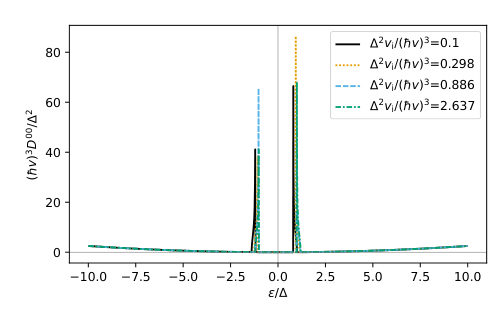
<figcaption class="paper-figure-caption"><b>Fig 2.</b> Figure 3 shows the scaling relation between the electric conductivity and the SAC and MMAC. We choose ϵF &gt; 0 to avoid the aforementioned sign change. Both these co- efficients have three regimes similarly to the AH conduc- tivity [12, 13]. In the superclean regime, the skew scatter- ing is dominant, and Γ00g xy sz and −Γ00g xy mz are propor- tional to σyy. In the moderately dirty regime, these coef- ficients are almost constant. Finally, in the dirty regime, we find a new scaling relation Γ00g xy sz , −Γ00g xy mz ∝ (σyy)0.6.</figcaption>
</figure>
<figure class="paper-figure-card">
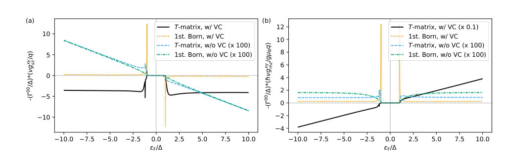
<figcaption class="paper-figure-caption"><b>Fig 3.</b> FIG. 2. Fermi-energy dependence of (a) the SAC −Γ00g xy sz and (b) MMAC −Γ00g xy mz within the T-matrix approximation with (black solid lines) and without the VCs (blue dashed lines). We also show the results within the first-order Born approximation with (orange dotted lines) and without the VCs (green dash-dotted lines). We choose (ℏv/∆)3ni = 0.1 and ∆2vi/(ℏv)3 = 0.1.</figcaption>
</figure>
<figure class="paper-figure-card">
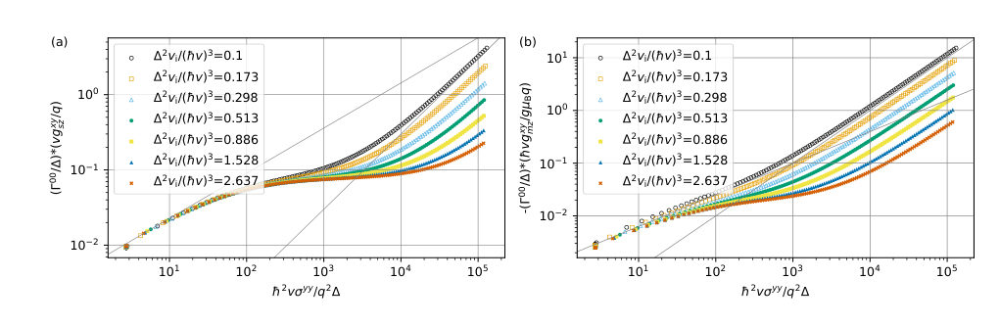
<figcaption class="paper-figure-caption"><b>Fig 4.</b> FIG. 3. Electric-conductivity dependence of (a) the SAC Γ00g xy sz and MMAC −Γ00g xy mz by changing the impurity concentration (ℏv/∆)3ni from 10−1 to 102.5. We choose ϵF/∆= 3.917. The slopes of two gray solid lines represent Γ00g xy sz , −Γ00g xy mz ∝σyy, (σyy)0.6.</figcaption>
</figure>
<figure class="paper-figure-card">
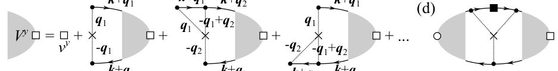
<figcaption class="paper-figure-caption"><b>Fig 5.</b> FIG. 4. Feynman diagrams for (a) the self-energy within the self-consistent T-matrix approximation, (b) the renormalized velocity vertex, (c) the spin–charge-current correlation function of the first order with respect to Qx, and (d) the correation function that vanishes in the case of short-range impurities.</figcaption>
</figure>
</div>

<p><strong>Summary.</strong> This paper develops a unified theory for the Spin Hall effect in Dirac electrons by calculating spin and magnetic moment accumulation coefficients ($  ext{SAC}$ and $ ext{MMAC}$). Using the T-matrix approximation, the authors predict three distinct scaling regimes based on impurity scattering strength. The key finding is a novel scaling exponent (0.6) in the dirty regime, providing a comprehensive picture of spin transport beyond simple current definitions.</p>
<p><strong>Why it may be interesting.</strong> While focused on condensed matter transport rather than quantum information directly, the rigorous theoretical framework involving non-equilibrium Green's functions, symmetry analysis (time-reversal/inversion), and scaling laws in disordered systems is highly relevant to understanding decoherence and topological effects in open quantum systems.</p>
<details>
<summary>Detailed structure</summary>
<p><strong>Main problem.</strong> The study focuses on developing a unified theory for the Spin Hall (SH) effect in Dirac electrons, specifically addressing ambiguities related to defining spin current.</p>
<p><strong>Main result.</strong> The authors found three distinct scaling regimes for the spin and magnetic-moment accumulation coefficients ($ ext{SAC}$ and $ ext{MMAC}$) as impurity scattering changes, with a novel exponent of 0.6 in the dirty regime that differs from the anomalous Hall effect's scaling.</p>
<p><strong>Method.</strong> Theoretical calculations utilizing the self-consistent T-matrix approximation within linear response theory framework applied to Green's functions for Dirac electrons.</p>
<p><strong>Model / system.</strong> The model uses a Dirac Hamiltonian describing low-energy physics, such as in bismuth, and incorporates short-range nonmagnetic impurities via the T-matrix formalism. The analysis distinguishes between spin accumulation ($   ext{SAC}$) and magnetic moment accumulation ($    ext{MMAC}$).</p>
<p><strong>Key observables.</strong> Spin Accumulation Coefficient ($   ext{SAC}$), Magnetic-Moment Accumulation Coefficient ($    ext{MMAC}$), Spin Hall conductivity ($\sigma_{xy}^{sz}$), and $  ext{MMH}$ conductivity ($\sigma_{xy}^{mz}$).</p>
<p><strong>Important parameters / regimes.</strong> Electric conductivity ($\sigma^{yy}$), Fermi energy ($\epsilon_F$), impurity concentration ($n_i$), and the ratio of band gap to Fermi energy.</p>
<p><strong>Assumptions / limitations.</strong> The calculations rely on the self-consistent T-matrix approximation, assuming short-range impurities, and often neglect vertex corrections (VCs) or assume a scalar self-energy.</p>
<p><strong>Figures summary.</strong> Figures illustrate the density of states, the dependence of $  ext{SAC}$ and $ ext{MMAC}$ on Fermi energy (comparing T-matrix vs. Born approximations), and the scaling relationship between conductivity and $    ext{SAC}/   ext{MMAC}$ across different impurity regimes.</p>
<p><strong>Paper structure.</strong> The paper systematically derives transport coefficients ($\sigma_{jj}, \sigma_{ij}^{sa}, g_{ij}^{sa}, \sigma_{xy}^{mz}$) using Keldysh Green's functions in the T-matrix approximation, analyzes the resulting scaling laws based on conductivity, and concludes by proposing $  ext{SAC}$ as a robust measure for the SH effect.</p>
</details>
<details>
<summary>Abstract</summary>
<p>We study the spin Hall (SH) effect for the Dirac electrons in terms of the spin and magnetic-moment accumulation coefficients $-Γ^{00} g_{s(m)z}^{\phantom{s(m)z} xy}$. We take short-range nonmagnetic impurities into account within the self-consistent $T$-matrix approximation. Similarly to the universal scaling for the anomalous Hall (AH) effect, we find three disctinct regimes by changing the electric conductivity $σ^{yy}$; the superclean regime with $-Γ^{00} g_{s(m)z}^{\phantom{s(m)z} xy} \propto σ^{yy}$ owing to the skew scattering, moderately dirty regime with almost constant $-Γ^{00} g_{s(m)z}^{\phantom{s(m)z} xy}$, and dirty regime with a new scaling relation $-Γ^{00} g_{s(m)z}^{\phantom{s(m)z} xy} \propto (σ^{yy})^{0.6}$ whose exponent differs from that of the AH conductivity. Our results construct a unified theory of the SH effect without any ambiguity of spin current.</p>
</details>
<p><sub><a href="#top">↑ back to top</a></sub></p>

<p><a id="paper-2607.00769"></a></p>
<h3 id="universal-logic-circuit-for-gate-controlled-superconductor-based-switches-operating-at-liquid-helium-temperatures"><a href="http://arxiv.org/abs/2607.00769v1">Universal logic circuit for gate-controlled superconductor-based switches operating at liquid-helium temperatures</a></h3>
<p><strong>Authors:</strong> Martin Berke, Lőrinc Kupás, Tosson Elalaily, Máté Sütő, Szabolcs Csonka, Péter Makk<br>
<strong>Type:</strong> experiment · <strong>Category:</strong> quantum information and computing · <strong>PDF:</strong> <a href="https://arxiv.org/pdf/2607.00769v1">https://arxiv.org/pdf/2607.00769v1</a><br>
<strong>Analysis basis:</strong> full PDF text, analyzed in chunks
<strong>Topic relevance:</strong> 🔥 <code>QC/QI experiment</code> <strong>4/5</strong> · <code>driven-dissipative phase transition</code> <strong>1/5</strong> · <code>methods for driven-dissipative</code> <strong>1/5</strong></p>
<div class="figure-strip-hint">↔ Scroll figures horizontally</div>
<div class="paper-figures-scroll">
<figure class="paper-figure-card">
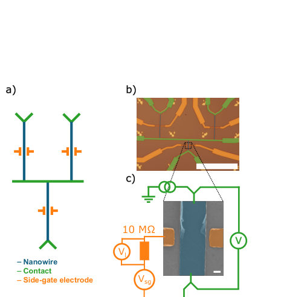
<figcaption class="paper-figure-caption"><b>Fig 1.</b> Fig. 1. Device configuration (a) The device consists of three NWs (blue) that are connected to a common line (green) at one end, and there are two more contacts (green) at the other end of each NW. Each NW is con- trolled by two side gate electrodes (orange). (b) Optical microscope image of a device. Scale bar: 25 µm (c) SEM image of the active region of the device showing the wire and the gate electrodes Scale bar: 100 nm.</figcaption>
</figure>
<figure class="paper-figure-card">

<figcaption class="paper-figure-caption"><b>Fig 2.</b> Fig. 2. Suppression of the supercurrent with gating the device and logic operation principle (a) V −I curve of a NW measured at 4 K. (b) The critical cur- rent of a NW as a function of the applied gate voltage on one of the side-gate electrodes (red) and the leakage current calculated from the voltage drop measured across a pre-resistor (blue). With increasing gate voltage on the side-gate electrode, the critical current of the NW can be suppressed, accompanied by a large enhancement in the leakage current. (c) An external voltage signal can switch a NW between the SC and N states. For devices where the onset and offset of the gating effect correspond to gate voltages largar than 5 V, the...</figcaption>
</figure>
<figure class="paper-figure-card">

<figcaption class="paper-figure-caption"><b>Fig 3.</b> Fig. 3. Logic gates operation for the AND, OR, NOT and COPY gates. (a)-(d) The schematic circuit diagram for the AND, OR, NOT and COPY gates. The input signals inputA and inputB represent the additional gate voltage on top of the gate voltage setting the working point on panels (e)-(h). (e) The logic operation of the AND gate. There is a clear increase in the output voltage (green) as the function of time, when both input signals (blue, orange) are high. (f) The logic operation of the OR gate. The output voltage (green) as the input signals (blue, orange) are changed with respect to time. A clear increase in the output voltage can be seen, when any or both input signals are high. (g) The...</figcaption>
</figure>
</div>

<p><strong>Summary.</strong> This work demonstrates a functional universal logic circuit built from superconducting nanowires controlled by side-gate electrodes. By exploiting the Gate-Controlled Supercurrent effect, the authors successfully implemented all classical logic gates (AND, OR, NOT, etc.) using only three components. This establishes a promising, low-power building block for future hybrid superconducting supercomputers.</p>
<p><strong>Why it may be interesting.</strong> While focused on classical digital logic, the underlying physics—controlling quantum states (superconductivity) with external fields to achieve robust switching—is highly relevant to superconducting qubits and quantum circuit design.</p>
<details>
<summary>Detailed structure</summary>
<p><strong>Main problem.</strong> The research aims to develop superconducting-based computing architectures to overcome scaling and power limitations of conventional CMOS electronics.</p>
<p><strong>Main result.</strong> A universal logic circuit capable of implementing all classical logic gates (AND, OR, NOT, etc.) and combinational circuits like the half-adder was realized using only three superconducting nanowires.</p>
<p><strong>Method.</strong> The functionality is demonstrated by controlling the supercurrent in superconducting nanowires via an applied gate voltage, switching the device between a zero-voltage superconducting state and a finite-voltage normal state.</p>
<p><strong>Model / system.</strong> The system utilizes superconductor-semiconductor hybrid structures, specifically $  ext{NbTiN}$ superconducting nanowires patterned on Si substrates. The operation relies critically on the Gate-Controlled Supercurrent (GCS) effect.</p>
<p><strong>Key observables.</strong> Switching current ($I_{sw}$), critical current ($I_c$) as a function of gate voltage ($V_{sg}$), and the resulting output voltage ($\approx 2 	ext{ V}$) corresponding to logical '1' or '0'.</p>
<p><strong>Important parameters / regimes.</strong> Operation is performed at liquid helium temperatures ($4	ext{ K}$). Key electrical parameters include $I_{sw} \approx 332\ \mu	ext{A}$ and gate voltage ranges for suppression ($\approx 30	ext{ V}$ to $40	ext{ V}$).</p>
<p><strong>Assumptions / limitations.</strong> The primary limitation noted is the requirement for large gate voltages to achieve supercurrent suppression, and thermal fluctuations can cause small scattering on plateaus.</p>
<p><strong>Figures summary.</strong> Figures illustrate the device configuration using three nanowires; $V-I$ curves demonstrate switching capability; schematics show time-domain realizations of AND, OR, NOT, XOR, and half-adder logic gates.</p>
<p><strong>Paper structure.</strong> The paper progresses by first establishing the GCS effect as a superconducting switch. It then systematically demonstrates the realization of basic gates (AND, OR, NOT) using minimal components, culminating in the proof of universality for all classical logic functions and combinational circuits.</p>
</details>
<details>
<summary>Abstract</summary>
<p>The observation of the gate-controlled supercurrent (GCS) effect in superconducting nanostructures initiated major research efforts toward the realisation of superconducting-based computing architectures. Here we introduce a universal logic circuit that can be a promising superconducting building block of classical hybrid supercomputers. We demonstrate a functionally complete set of logic gates by realising the AND, OR, NOT and COPY gates. The general layout and scalability of our device, combined with recent experiments demonstrating fast switching and small voltage signals, make it a functional candidate in superconducting electronics. Our device enables the realization of all classical logic gates and the half-adder combinational logic circuit using at most three nanowires, each uniquely configured with two side-gate electrodes.</p>
</details>
<p><sub><a href="#top">↑ back to top</a></sub></p>

<p><a id="paper-2607.00429"></a></p>
<h3 id="surface-platinum-alloying-for-passivation-of-oxide-interfaces-on-superconducting-niobium-films"><a href="http://arxiv.org/abs/2607.00429v1">Surface Platinum Alloying for Passivation of Oxide Interfaces on Superconducting Niobium Films</a></h3>
<p><strong>Authors:</strong> Ananya Chattaraj, Conan Weiland, Bruce Ravel, Kim Kisslinger, Sooyeon Hwang, Xiao Tong, Ajith Pattammattel, Andrew M. Kiss, Steven L. Hulbert, Aswin kumar Anbalagan, Andrew L. Walter, Peter V. Sushko, Mingzhao Liu<br>
<strong>Type:</strong> both · <strong>Category:</strong> quantum information and computing · <strong>PDF:</strong> <a href="https://arxiv.org/pdf/2607.00429v1">https://arxiv.org/pdf/2607.00429v1</a><br>
<strong>Analysis basis:</strong> full PDF text, analyzed in chunks
<strong>Topic relevance:</strong> 🔥 <code>QC/QI experiment</code> <strong>4/5</strong> · <code>Kondo &amp; dissipative impurity</code> <strong>1/5</strong></p>
<div class="figure-strip-hint">↔ Scroll figures horizontally</div>
<div class="paper-figures-scroll">
<figure class="paper-figure-card">

<figcaption class="paper-figure-caption"><b>Fig 1.</b> FIG. 1. (a, b) HRTEM images of bare Nb film near its top surface and near the Nb/Al2O3 interface.</figcaption>
</figure>
<figure class="paper-figure-card">
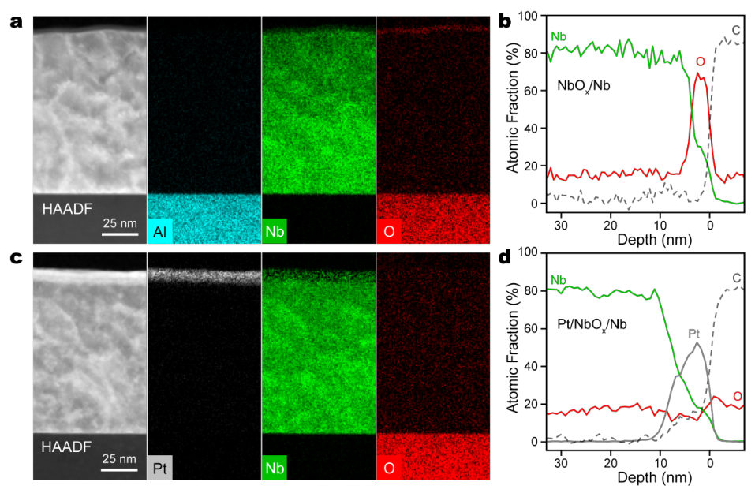
<figcaption class="paper-figure-caption"><b>Fig 2.</b> FIG. 2. (a) Cross-sectional HAADF-STEM image of a bare Nb thin film deposited on Al2O3,</figcaption>
</figure>
<figure class="paper-figure-card">

<figcaption class="paper-figure-caption"><b>Fig 3.</b> FIG. 3. (a, b) Nb 3d core-level VEXPS spectra of bare Nb measured at photon energies of 2000 eV</figcaption>
</figure>
<figure class="paper-figure-card">
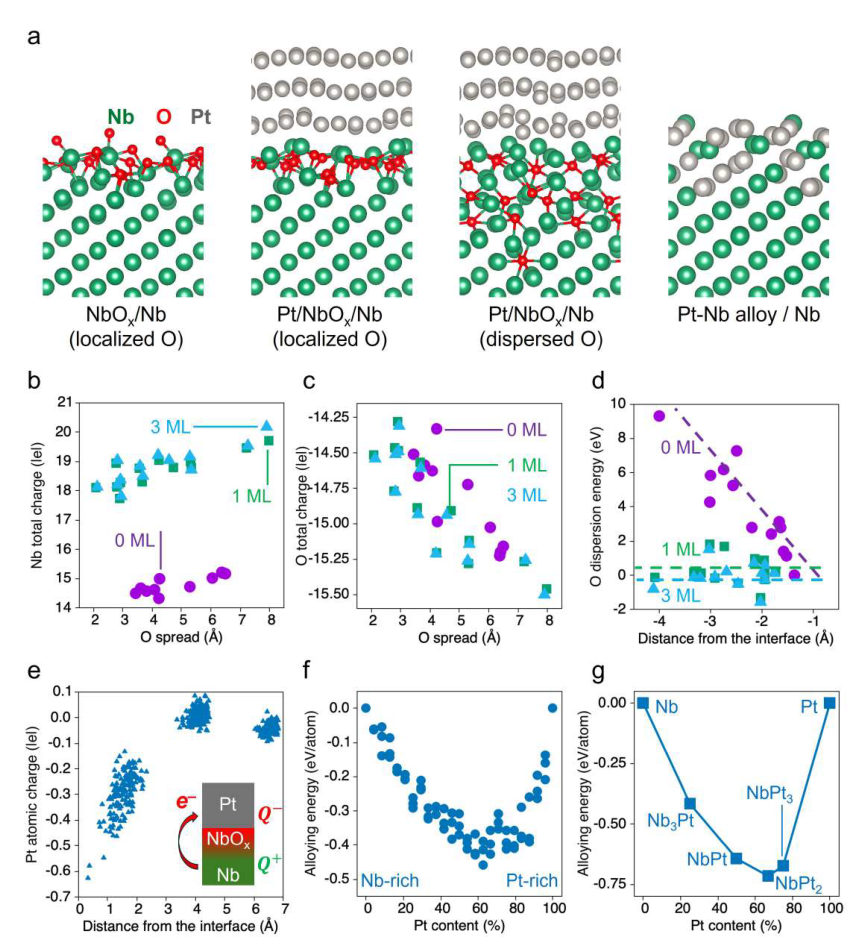
<figcaption class="paper-figure-caption"><b>Fig 4.</b> FIG. 4. (a) Computational models of representative structures. From left to right: partially</figcaption>
</figure>
<figure class="paper-figure-card">

<figcaption class="paper-figure-caption"><b>Fig 5.</b> FIG. 5. (a) Cross-sectional HAADF-STEM image of the top surface of Pt/NbOx/Nb thin film. The</figcaption>
</figure>
</div>

<p><strong>Summary.</strong> This research presents a robust method to passivate the native oxide interfaces on Niobium superconductors using Platinum alloying. By combining advanced spectroscopy and DFT simulations, the authors prove that annealing Pt overlayers forms a stable $    ext{Nb-Pt}$ alloy, effectively mitigating dielectric loss mechanisms critical for high-coherence superconducting qubits.</p>
<p><strong>Why it may be interesting.</strong> The work directly addresses a critical material science bottleneck for superconducting quantum circuits by engineering interface chemistry, which is highly relevant to open quantum systems where environmental coupling (loss) dictates coherence time.</p>
<details>
<summary>Detailed structure</summary>
<p><strong>Main problem.</strong> Dielectric loss from two-level systems (TLS) at surfaces and interfaces limits coherence in superconducting transmon qubits built using Niobium (Nb).</p>
<p><strong>Main result.</strong> Depositing a thin Pt layer followed by annealing transforms the surface into a chemically stable, passivating Nb–Pt alloy that suppresses further oxide growth.</p>
<p><strong>Method.</strong> The study combines advanced experimental techniques like Variable Energy XPS (VEXPS) and Extended X-ray Absorption Fine Structure (EXAFS) with first-principles DFT calculations.</p>
<p><strong>Model / system.</strong> The physical system is superconducting Nb films on sapphire, focusing specifically on the native oxide interface ($ ext{NbO}_x/ ext{Nb}$) and its modification by Pt alloying ($ ext{Pt}/    ext{NbO}_x/ ext{Nb}$).</p>
<p><strong>Key observables.</strong> Superconducting Transition Temperature ($T_c$), Residual Resistance Ratio (RRR), chemical oxidation states ($   ext{Nb}^{5+}$ vs $  ext{Nb}^0$), and local atomic structure derived from EXAFS fitting.</p>
<p><strong>Important parameters / regimes.</strong> $T_c = 9.30 \pm 0.10$ K; Native oxide thickness of $2.6 \pm 0.2$ nm; Alloying structures identified as $  ext{NbPt}_3$.</p>
<p><strong>Assumptions / limitations.</strong> VEXPS is necessary due to overlapping spectral signatures, and the analysis relies on fitting experimental data against theoretical structural models.</p>
<p><strong>Figures summary.</strong> Figures detail cross-sections showing oxide removal (EDX), VEXPS spectra confirming chemical state changes, and EXAFS fits establishing the $  ext{NbPt}_3$ surface alloy structure.</p>
<p><strong>Paper structure.</strong> The paper progresses from identifying the TLS loss problem in Nb qubits to demonstrating Pt encapsulation. It then uses advanced spectroscopy (VEXPS/EXAFS) to characterize the resulting stable $ ext{Nb-Pt}$ alloy, supported by DFT calculations elucidating charge transfer and structural formation.</p>
</details>
<details>
<summary>Abstract</summary>
<p>Dielectric loss arising from two-level systems (TLS) at surfaces and interfaces remains a primary limitation to coherence in superconducting transmon qubits. Niobium (Nb), a widely used material in superconducting quantum circuits, readily forms native oxides under ambient conditions, leading to lossy dielectric interfaces that degrade device performance. Here, a robust and scalable fabrication strategy is demonstrated for chemically stabilizing Nb surfaces and mitigating further oxidation, including protection of both surface and sidewall regions. High-purity Nb films were fabricated with bulk-like superconducting transition temperatures ($T_c = 9.30\pm0.10$) K. We demonstrate that a thin Pt encapsulation layer, deposited after native oxide formation, can be transformed via thermal annealing into a Nb-Pt alloy at the surface. Spectroscopic and microscopic analyses confirm the formation of a chemically stable metallic alloy layer and its ability to suppress further oxide growth. Ab initio simulations elucidate the atomic-scale rearrangement and electronic structure evolution associated with Pt incorporation on native niobium oxide, providing insight into the stabilization mechanism of the alloyed surface. This approach offers a materials pathway for engineering chemically robust Nb interfaces, including sidewalls, toward higher-coherence superconducting qubit architectures."</p>
</details>
<p><sub><a href="#top">↑ back to top</a></sub></p>

<p><a id="paper-2607.00903"></a></p>
<h3 id="characterization-of-hydroxyls-in-surface-oxide-of-superconducting-tantalum-and-their-mitigation-in-quantum-circuits"><a href="http://arxiv.org/abs/2607.00903v1">Characterization of Hydroxyls in Surface Oxide of Superconducting Tantalum and Their Mitigation in Quantum Circuits</a></h3>
<p><strong>Authors:</strong> Ekta Bhatia, Nicholas Pieniazek, Aleksandra Biedron, Sandra Schujman, Hunter Frost, Zhihao Xiao, Jakub Nalaskowski, Kevin Musick, Thomas Murray, Satyavolu Papa Rao<br>
<strong>Type:</strong> experiment · <strong>Category:</strong> quantum information and computing · <strong>PDF:</strong> <a href="https://arxiv.org/pdf/2607.00903v1">https://arxiv.org/pdf/2607.00903v1</a><br>
<strong>Analysis basis:</strong> full PDF text, analyzed in chunks
<strong>Topic relevance:</strong> 🔥 <code>QC/QI experiment</code> <strong>4/5</strong></p>
<div class="figure-strip-hint">↔ Scroll figures horizontally</div>
<div class="paper-figures-scroll">
<figure class="paper-figure-card">

<figcaption class="paper-figure-caption"><b>Fig 1.</b> Figure 1b quantifies the peak intensities extracted from panel (a), grouped by chemical state and plotted for each angle. While</figcaption>
</figure>
<figure class="paper-figure-card">

<figcaption class="paper-figure-caption"><b>Fig 2.</b> Figure 3c shows a nitridized Ta sample, where a distinct nitridized layer forms at the Ta surface due to its reaction with nitrogen</figcaption>
</figure>
<figure class="paper-figure-card">
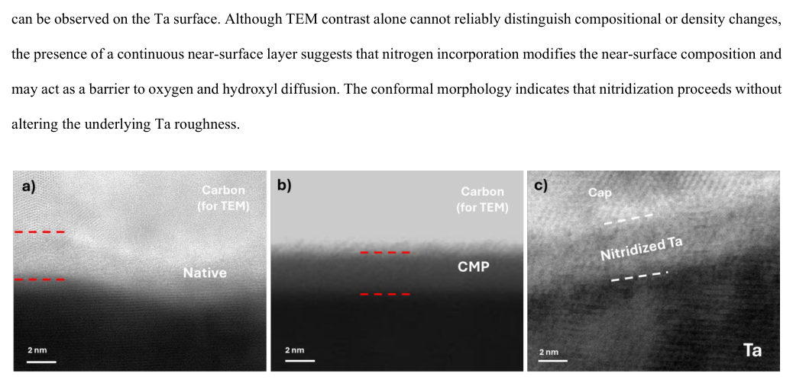
<figcaption class="paper-figure-caption"><b>Fig 3.</b> FIG. 3. Cross-sectional HR-TEM images of surface oxides on tantalum under different processing conditions: (a) Native oxide formed via ambient exposure. (b) CMP-processed sample shows a more planar surface and similar thickness as native oxide. (c) Nitridized Ta surface shows a nitridized layer under a protective cap deposited after 3 weeks of ambient exposure.</figcaption>
</figure>
<figure class="paper-figure-card">
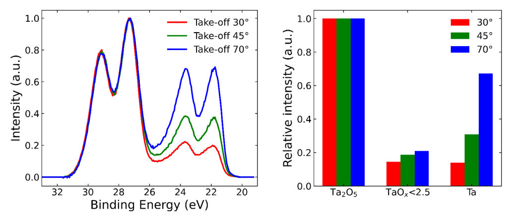
<figcaption class="paper-figure-caption"><b>Fig 4.</b> FIG. 1. Angle-resolved X-ray photoelectron spectroscopy (ARXPS) analysis of Ta oxidation states as a function of sampling depth. (a) Ta 4f core-level spectra acquired at take-off angles of 30°, 45°, and 70°, normalized to the Ta₂O₅ peak at each angle to show comparison of underlying oxidation states. (b) Relative peak intensities of Ta⁵⁺ (Ta₂O₅), TaOₓ&lt;2.5, and Ta⁰ extracted by CasaXPS curve fitting for each angle. The inset schematically illustrates the corresponding layered structure based on ARXPS analysis.</figcaption>
</figure>
<figure class="paper-figure-card">
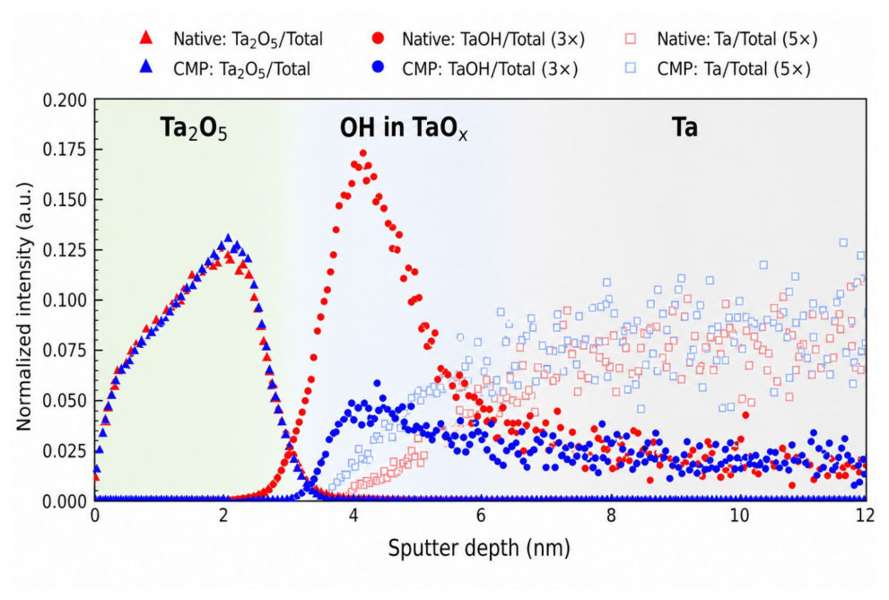
<figcaption class="paper-figure-caption"><b>Fig 5.</b> FIG. 2. Depth profiles of oxide species and hydroxyl content in native and CMP-formed tantalum oxides: SIMS data showing the normalized intensities of Ta₂O₅, TaOH, and Ta signals plotted as a function of sputter depth. The TaOH/Total signal reaches a maximum in</figcaption>
</figure>
</div>

<p><strong>Summary.</strong> This experimental study characterizes the formation of hydroxyl defects within the surface oxides of superconducting Tantalum. Using SIMS and ARXPS, the authors prove that these hydroxyl groups are major contributors to decoherence sources in quantum circuits. They demonstrate that modifying the oxide layer via CMP or plasma nitridization can effectively suppress this defect concentration.</p>
<p><strong>Why it may be interesting.</strong> This work directly addresses a critical material science bottleneck for superconducting qubits and quantum devices by identifying a specific molecular defect source (hydroxyls) and providing actionable surface engineering solutions.</p>
<details>
<summary>Detailed structure</summary>
<p><strong>Main problem.</strong> Surface oxides on superconducting Tantalum (Ta) host Two-Level System (TLS) defects, which are a primary source of microwave loss and decoherence in quantum circuits.</p>
<p><strong>Main result.</strong> The accumulation of hydroxyls ([OH]) in the suboxide region is confirmed, and surface engineering techniques like Chemical Mechanical Planarization (CMP) or plasma nitridization can suppress this hydroxyl loading to improve coherence.</p>
<p><strong>Method.</strong> The study employs advanced characterization techniques including Secondary Ion Mass Spectrometry (SIMS), Angle-resolved X-ray Photoelectron Spectroscopy (ARXPS), and Transmission Electron Microscopy (TEM).</p>
<p><strong>Model / system.</strong> The physical system is superconducting Tantalum ($\alpha$-Ta) films coated with native or engineered surface oxides ($  ext{Ta}_2   ext{O}_5$, $    ext{TaO}_x$). The focus is on the molecular defects, specifically hydroxyls, within this oxide layer.</p>
<p><strong>Key observables.</strong> Depth profiles of oxide species ($ ext{Ta}_2   ext{O}_5$, $    ext{TaOH}$), total maximum $    ext{TaOH}^-/    ext{Total}$ signal intensity across different treatments.</p>
<p><strong>Important parameters / regimes.</strong> Superconducting temperature regime, surface treatment type (native vs. CMP vs. nitridized), and oxide thickness.</p>
<p><strong>Assumptions / limitations.</strong> The TLS defects are molecularly linked to the presence of hydroxyl groups within the non-uniform oxide structure; mitigation via surface chemistry is feasible.</p>
<p><strong>Figures summary.</strong> Figures show ARXPS analysis confirming stratified oxidation states, SIMS depth profiles quantifying $  ext{TaOH}$ accumulation in suboxides, and comparative plots demonstrating that CMP or nitridization reduces the maximum hydroxyl signal intensity.</p>
<p><strong>Paper structure.</strong> The paper systematically characterizes the oxide structure using ARXPS/TEM, then uses SIMS to map out the chemical species ($  ext{Ta}_2   ext{O}_5$, $    ext{TaOH}$) across depth. It culminates by comparing native vs. engineered oxides (CMP, nitridization) to quantify hydroxyl suppression.</p>
</details>
<details>
<summary>Abstract</summary>
<p>Recently, tantalum (Ta) has gained attention in superconducting quantum circuits due to the longer coherence times achieved when replacing niobium (Nb) in capacitor pads. Previous literature shows that surface oxides that form upon ambient exposure on superconducting metals such as Ta, Al, and Nb host two-level system (TLS) defects, which are a leading source of microwave loss and decoherence. While the surface oxides of Nb and Al have been extensively studied, Ta oxides remain less well understood. Using secondary ion mass spectrometry of alpha-Ta films deposited at 300 mm wafer scale, we show for the first time that hydroxyls accumulate in the Ta suboxide region above the underlying Ta. Angle-resolved X-ray photoelectron spectroscopy shows that the surface region is dominated by Ta2O5, with sub-stoichiometric TaOx present in between the Ta2O5 and underlying Ta. The thickness of the tantalum oxide is confirmed by transmission electron microscopy. We demonstrate that [OH] incorporation can be suppressed by replacing the native oxide with an oxide formed during chemical mechanical planarization of alpha-Ta films. Our findings support the hypothesis that TLS defects are non-uniform within the oxide thickness and suggest hydroxyls as a probable molecular origin of these loss channels. Furthermore, we show the feasibility of plasma nitridization as a method to decrease hydroxyl loading on alpha-Ta surfaces. The modulation of hydroxyl content through surface engineering of alpha-Ta can enable the fabrication of more robust, high-coherence superconducting quantum circuits by addressing a potential TLS source.</p>
</details>
<p><sub><a href="#top">↑ back to top</a></sub></p>

<p><a id="paper-2607.00615"></a></p>
<h3 id="evanescent-absorption-spectroscopy-of-transition-metal-dichalcogenide-materials-using-guided-photoluminescence-in-simath1053mathnmath1054math-photonic-waveguides"><a href="http://arxiv.org/abs/2607.00615v1">Evanescent absorption spectroscopy of transition metal dichalcogenide materials using guided photoluminescence in Si$_3$N$_4$ photonic waveguides</a></h3>
<p><strong>Authors:</strong> Victor Gonzalez-Morote, Marianna Sledzinska, Arkadiusz P. Gertych, Syed Hassan Abbas Jaffery, Mariusz Zdrojek, Daniel Navarro-Urrios<br>
<strong>Type:</strong> experiment · <strong>Category:</strong> other · <strong>PDF:</strong> <a href="https://arxiv.org/pdf/2607.00615v1">https://arxiv.org/pdf/2607.00615v1</a><br>
<strong>Analysis basis:</strong> full PDF text, analyzed in chunks
<strong>Topic relevance:</strong> <code>interference shaping light</code> <strong>3/5</strong> · <code>quantum optics experiment</code> <strong>3/5</strong> · <code>Tavis-Cummings &amp; cavity-many-emitter</code> <strong>2/5</strong> · <code>correlated cavity matter</code> <strong>2/5</strong> · <code>driven-dissipative phase transition</code> <strong>2/5</strong> · <code>QC/QI experiment</code> <strong>1/5</strong> · <code>methods for driven-dissipative</code> <strong>1/5</strong> · <code>quantum measurements</code> <strong>1/5</strong> · <code>spintronics-quantum-optics interface</code> <strong>1/5</strong></p>
<div class="figure-strip-hint">↔ Scroll figures horizontally</div>
<div class="paper-figures-scroll">
<figure class="paper-figure-card">

<figcaption class="paper-figure-caption"><b>Fig 1.</b> Figure 1. Evanescent absorption spectroscopy of a 2D material integrated on a dielectric</figcaption>
</figure>
<figure class="paper-figure-card">
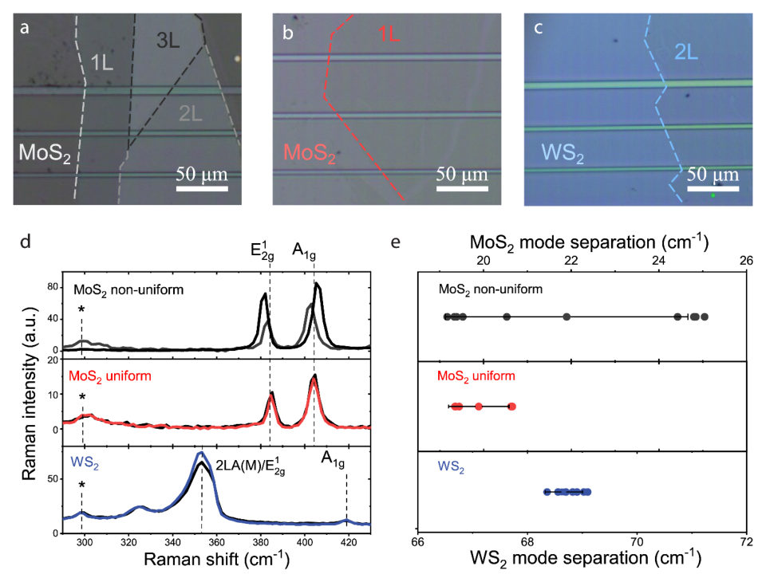
<figcaption class="paper-figure-caption"><b>Fig 2.</b> Figure 2. Optical and Raman characterization of the TMD-covered waveguides. (a–c) Optical</figcaption>
</figure>
<figure class="paper-figure-card">
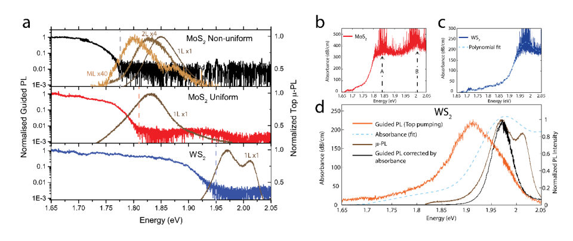
<figcaption class="paper-figure-caption"><b>Fig 3.</b> Figure 3. Evanescent absorption and guided photoluminescence of Si₃N₄ waveguides covered by</figcaption>
</figure>
</div>

<p><strong>Summary.</strong> The paper introduces and validates a novel technique for measuring the optical absorption of 2D TMD materials integrated into $    ext{Si}_3   ext{N}_4$ waveguides. By using the waveguide's own photoluminescence as an internal probe source, they achieve source-free, on-chip spectroscopy. This method directly quantifies how guided light interacts with the TMDs, providing critical data for developing next-generation integrated quantum optoelectronic devices.</p>
<p><strong>Why it may be interesting.</strong> This work provides a powerful experimental tool for characterizing quantum material properties (excitonic absorption) under realistic device operating conditions, which is crucial input data for designing quantum photonic circuits or sensing elements.</p>
<details>
<summary>Detailed structure</summary>
<p><strong>Main problem.</strong> The core challenge is developing a method to accurately measure the optical absorption of two-dimensional transition metal dichalcogenides (TMDs) while they are integrated into an operational photonic waveguide environment.</p>
<p><strong>Main result.</strong> The authors successfully demonstrated source-free, on-chip evanescent absorption spectroscopy, showing that guided photoluminescence spectral reshaping quantitatively reflects the energy-dependent absorption response of the TMD layer.</p>
<p><strong>Method.</strong> They use the broadband defect-related photoluminescence generated within the $  ext{Si}_3   ext{N}_4$ waveguide core as an internal light source, which then propagates and is attenuated by evanescent coupling with the overlying TMD flake.</p>
<p><strong>Model / system.</strong> The system involves transferring TMD flakes ($  ext{MoS}_2$, $  ext{WS}_2$) onto $  ext{Si}_3   ext{N}_4$ photonic waveguides. Measurements compare this guided PL attenuation to local micro-photoluminescence ($\mu$-PL) and Raman characterization.</p>
<p><strong>Key observables.</strong> Energy-dependent guided absorption spectrum ($ ext{dB cm}^{-1}$), spectral reshaping of photoluminescence, and comparison between uniform vs. non-uniform flake measurements.</p>
<p><strong>Important parameters / regimes.</strong> Excitonic resonance energies (e.g., $\sim 1.83 	ext{ eV}$ for $  ext{MoS}_2$), coverage lengths ($L = 680 \mu   ext{m}$ to $1.2 	ext{ mm}$), and attenuation coefficients ($\alpha$).</p>
<p><strong>Assumptions / limitations.</strong> The technique assumes the PL generated in the core accurately represents the light interacting with the TMDs, and near resonance, reported losses are conservative lower-bound estimates due to saturation effects.</p>
<p><strong>Figures summary.</strong> Figures illustrate sample sketches, comparison plots of transmitted vs. reference spectra, and detailed spectral measurements showing excitonic resonances and attenuation profiles for $  ext{MoS}_2$ and $   ext{WS}_2$.</p>
<p><strong>Paper structure.</strong> The paper introduces the necessity of in-situ characterization, details the source-free PL measurement technique using $   ext{Si}_3   ext{N}_4$ waveguides, presents comparative results against local measurements ($\mu$-PL/Raman), and concludes by validating the platform for integrated optoelectronics.</p>
</details>
<details>
<summary>Abstract</summary>
<p>On-chip integration of two-dimensional transition metal dichalcogenides (TMDs) with photonic waveguides underpins a growing class of compact optoelectronic and sensing devices, whose performance depends on the optical absorption of the 2D material in this integrated environment. We demonstrate source-free, on-chip evanescent absorption spectroscopy of MoS$_2$ and WS$_2$ flakes integrated on Si$_3$N$_4$ waveguides, in which the broadband defect-related photoluminescence of the Si$_3$N$_4$ core itself acts as the internal probe. Light generated inside the core propagates under the TMD flake and is spectrally attenuated by evanescent interaction with the 2D material, and normalizing the transmitted spectrum to a reference waveguide without TMD yields the energy-dependent absorption response without any external illumination. The extracted guided absorption agrees with Raman and local micro-photoluminescence characterization and resolves differences between spatially uniform and non-uniform flakes. A complementary top-pumping scheme recovers guided WS$_2$ photoluminescence, whose spectral reshaping during propagation is quantitatively reproduced by the measured absorption. This source-free platform qualifies 2D materials in their integrated photonic environment and provides a direct route toward waveguide-integrated TMD photodetectors and sensors.</p>
</details>
<p><sub><a href="#top">↑ back to top</a></sub></p>

<p><a id="paper-2607.01149"></a></p>
<h3 id="topological-hall-effect-due-to-electron-skyrmion-scattering"><a href="http://arxiv.org/abs/2607.01149v1">Topological Hall effect due to electron-skyrmion scattering</a></h3>
<p><strong>Authors:</strong> Arijit Mandal, Hareram Swain, B. R. K. Nanda, S. Satpathy<br>
<strong>Type:</strong> theory · <strong>Category:</strong> other · <strong>PDF:</strong> <a href="https://arxiv.org/pdf/2607.01149v1">https://arxiv.org/pdf/2607.01149v1</a><br>
<strong>Analysis basis:</strong> full PDF text, analyzed in chunks
<strong>Topic relevance:</strong> <code>Keldysh / 2PI / non-Gaussian methods</code> <strong>3/5</strong> · <code>spintronics-quantum-optics interface</code> <strong>3/5</strong> · <code>driven-dissipative phase transition</code> <strong>2/5</strong> · <code>methods for driven-dissipative</code> <strong>2/5</strong> · <code>non-equilibrium universality</code> <strong>2/5</strong> · <code>Kondo &amp; dissipative impurity</code> <strong>1/5</strong> · <code>analog quantum simulation</code> <strong>1/5</strong> · <code>exotic spin models in light-matter</code> <strong>1/5</strong> · <code>non-equilibrium dynamics</code> <strong>1/5</strong></p>
<div class="figure-strip-hint">↔ Scroll figures horizontally</div>
<div class="paper-figures-scroll">
<figure class="paper-figure-card">

<figcaption class="paper-figure-caption"><b>Fig 1.</b> FIG. 1. Schematic diagram of scattering of a spin up elec- tron. The scattered wave consists of both a spin-preserved component and a spin-flip component with spin-dependent momentum kσ. The net transverse current is denoted by Jαβ tr , where β (α) is the spin of the incident (scattered) electron. For energy E &lt; J, even though there is no spin down incident or scattered beam, the spin down state can nevertheless exist in the skyrmion region, produced via the spin-flip potential, and can thereby influence the scattering process.</figcaption>
</figure>
<figure class="paper-figure-card">

<figcaption class="paper-figure-caption"><b>Fig 2.</b> FIG. 2. Scattering dynamics of a spin-up Gaussian wavepacket from numerical solution of the time-dependent Schr¨odinger equation following the methods of Ref. [26]. The upper panel indicates the trapped spin-down state for E &lt; J, dynamically generated inside the skyrmion, indicated by the black circle, during the scattering process. In contrast, the lower panel, where E &gt; J, shows a small propagating spin down component after scattering, which will result in a spin- down current at r →∞. All figures are time snapshots of probability distribution |ψ|2 in both spin up and down chan- nels as indicated. The color coding, which is different for the two spin channels, indicates the magnitude of...</figcaption>
</figure>
<figure class="paper-figure-card">
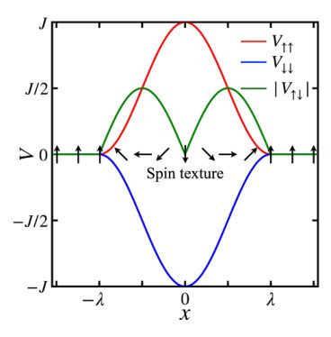
<figcaption class="paper-figure-caption"><b>Fig 3.</b> FIG. 4. Scattering potential V (r) for the skyrmion corre- sponding to Eq. (15) plotted along the x axis. Here, λ is the skyrmion radius, and J is the exchange parameter. The spin up (down) electron experiences a spin-preserving repul- sive (attractive) potential together with a complex spin-flip scattering potential, whose magnitude |V↑↓| has been shown. There is no scattering potential outside |r| &gt; λ, and the ar- rows on the central line indicate the skyrmion spins.</figcaption>
</figure>
<figure class="paper-figure-card">

<figcaption class="paper-figure-caption"><b>Fig 4.</b> FIG. 3. Total scattering cross section σαβ for a skyrmion with winding number m = 1 as a function of the exchange energy J (the corresponding adiabatic parameter χ is shown on the top). Born approximation and exact results are shown for both spin up (top) and spin down (bottom) incoming elec- tron. The second Born approximation contains the three-spin scattering processes to the lowest order and hence the effect of chirality. However, the Born approximation results deviate quickly from the exact results as J is increased, necessitat- ing a full solution for typical solids. In the figure, the kinetic energy of the incident electron Ek = 4 eV and the skyrmion radius λ = 10 ˚A.</figcaption>
</figure>
<figure class="paper-figure-card">

<figcaption class="paper-figure-caption"><b>Fig 5.</b> FIG. 5. Typical features of the scattering cross section. (a) Total scattering cross section σ↑↑/↓↑for incident spin-up electron. (b) Same for the spin-down electron, denoted by σ↑↓/↓↓. (c) Angular dependence of the differential scattering cross section for incident spin-up electrons with energy E = Ek↑= 1 eV. Since E &lt; J, there is no spin-down scattering component, as it cannot exist outside the skyrmion region. (d) The same for Ek↑&gt; J, but here scattering can occur to both spin channels. (e) and (f) Differential scattering cross section for spin-down incident electrons with two different energies. In this case, scattering is allowed to both spin channels for all energies. The spin-flip...</figcaption>
</figure>
</div>

<p><strong>Summary.</strong> This theoretical work investigates how electrons scatter from magnetic skyrmion textures in the strong-coupling regime, moving beyond simple weak-interaction approximations. By employing the Lippmann-Schwinger equation, the authors predict new scattering resonances that critically determine the material's topological and spin Hall conductivities. This provides a detailed quantum mechanical understanding of charge transport in complex chiral magnetic materials.</p>
<p><strong>Why it may be interesting.</strong> While focused on condensed matter transport, the use of advanced Green's function techniques to model quantum scattering off structured potentials (like skyrmions) shares mathematical rigor with open quantum system dynamics and non-equilibrium many-body physics.</p>
<details>
<summary>Detailed structure</summary>
<p><strong>Main problem.</strong> The study addresses electron scattering from chiral spin textures, like skyrmions, specifically overcoming the limitations of weak-coupling approximations used in previous research.</p>
<p><strong>Main result.</strong> The full formalism reveals novel scattering features—including Ramsauer-Townsend minima and Landau-level resonances—that strongly influence the topological and spin Hall conductivities.</p>
<p><strong>Method.</strong> The problem is solved using the Lippmann-Schwinger equation and Green's function formalism, which remains valid across all coupling strengths.</p>
<p><strong>Model / system.</strong> The system models itinerant electrons scattering off a 2D skyrmion potential derived from an exchange interaction Hamiltonian. The analysis focuses on calculating spin-dependent scattering cross sections ($\sigma_{\alphaeta}$) and resulting transverse currents.</p>
<p><strong>Key observables.</strong> Topological Hall conductivity ($\sigma_H$), Spin Hall conductivity ($\sigma_{SH}$), and the energy-dependent total scattering cross section ($\sigma$).</p>
<p><strong>Important parameters / regimes.</strong> Incident electron energy ($E$) relative to the exchange coupling strength ($J$); winding number ($m$) of the skyrmion.</p>
<p><strong>Assumptions / limitations.</strong> The analysis uses a full Green's function approach, which is non-perturbative and valid for strong coupling; approximations are noted when relating the magnetic field to Landau levels (adiabatic limit).</p>
<p><strong>Figures summary.</strong> Figures illustrate time evolution of wave packets showing spin trapping at low energy ($E<J$), scattering cross sections ($\sigma_{\alphaeta}$) exhibiting resonances, and plots detailing $\sigma_H$ and $\sigma_{SH}$ dependence on incident energy $E$.</p>
<p><strong>Paper structure.</strong> The paper progresses from establishing the necessity of a full-coupling formalism to calculating spin-resolved scattering cross sections. It then derives the topological and spin Hall conductivities based on current asymmetries, mapping out distinct behavior in different energy regimes relative to the coupling strength.</p>
</details>
<details>
<summary>Abstract</summary>
<p>Electron scattering from chiral spin textures such as skyrmions is fundamental to the understanding of transport in more complex systems, including skyrmion crystals. Most of the previous studies have focused on the weak-coupling regime, where the exchange interaction is small compared with the electron energy. Real materials, however, often lie in the strong-coupling regime, which exhibits qualitatively different behavior. Using the Lippmann-Schwinger equation and Green's function formalism, valid for all coupling strengths, we uncover several new features in the scattering cross section, including Ramsauer-Townsend minima, pronounced intermediate-coupling resonances, and Landau-level resonances for skyrmions with larger winding numbers. These features strongly influence the topological and spin Hall conductivities, which depend sensitively on the incident electron energy. Our work provides important insights into the Hall transport in collective chiral spin textures such as the skyrmion crystal.</p>
</details>
<p><sub><a href="#top">↑ back to top</a></sub></p>

<p><a id="paper-2607.00104"></a></p>
<h3 id="an-analog-ac-voltage-amplifier-based-on-a-single-straintronic-magnetic-tunnel-junction"><a href="http://arxiv.org/abs/2607.00104v1">An analog ac voltage amplifier based on a single straintronic magnetic tunnel junction</a></h3>
<p><strong>Authors:</strong> Cael Johnson, Rahnuma Rahman, Supriyo Bandyopadhyay<br>
<strong>Type:</strong> theory · <strong>Category:</strong> other · <strong>PDF:</strong> <a href="https://arxiv.org/pdf/2607.00104v1">https://arxiv.org/pdf/2607.00104v1</a><br>
<strong>Analysis basis:</strong> full PDF text, analyzed in chunks
<strong>Topic relevance:</strong> <code>spintronics-quantum-optics interface</code> <strong>3/5</strong> · <code>driven-dissipative phase transition</code> <strong>2/5</strong> · <code>methods for driven-dissipative</code> <strong>2/5</strong> · <code>Keldysh / 2PI / non-Gaussian methods</code> <strong>1/5</strong> · <code>Kondo &amp; dissipative impurity</code> <strong>1/5</strong> · <code>analog quantum simulation</code> <strong>1/5</strong> · <code>correlated / nonlocal dissipation</code> <strong>1/5</strong> · <code>exotic spin models in light-matter</code> <strong>1/5</strong> · <code>non-equilibrium dynamics</code> <strong>1/5</strong> · <code>non-equilibrium universality</code> <strong>1/5</strong></p>
<div class="figure-strip-hint">↔ Scroll figures horizontally</div>
<div class="paper-figures-scroll">
<figure class="paper-figure-card">
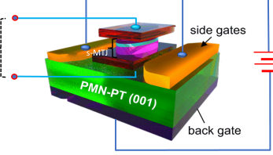
<figcaption class="paper-figure-caption"><b>Fig 1.</b> Fig. 1. The structure of a straintronic magnetic tunnel junction. Reprinted from [8], with the permission of AIP Publishing.</figcaption>
</figure>
<figure class="paper-figure-card">
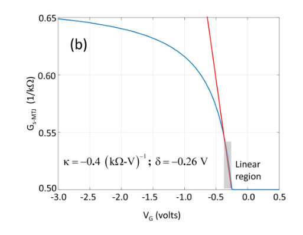
<figcaption class="paper-figure-caption"><b>Fig 2.</b> Fig. 2. The computed Gs−MT J versus VG transfer characteristic of a s-MTJ at room temperature. The linear region is shaded in gray. Within this region, the characteristic follows Equation (1). The values of κ and δ for this MTJ are shown. ©2022 IEEE. Reprinted with permission from [6].</figcaption>
</figure>
<figure class="paper-figure-card">

<figcaption class="paper-figure-caption"><b>Fig 3.</b> Fig. 3. A swing of the gate voltage around the quiescent point results in a corresponding swing of the s-MTJ conductance. The waveform shown here is triangular but the principle holds for any arbitrary waveform. The gate voltage swing has to be small enough to stay within the linear region.</figcaption>
</figure>
<figure class="paper-figure-card">

<figcaption class="paper-figure-caption"><b>Fig 4.</b> Fig. 4. Time variation of the s-MTJ conductance in the presence of a dc + ac gate voltage at different frequencies. The dc voltage was -0.26 V and the ac voltage amplitude was 10 mV to ensure that the gate voltage excursion always remains within the linear region of the transfer characteristic.</figcaption>
</figure>
<figure class="paper-figure-card">
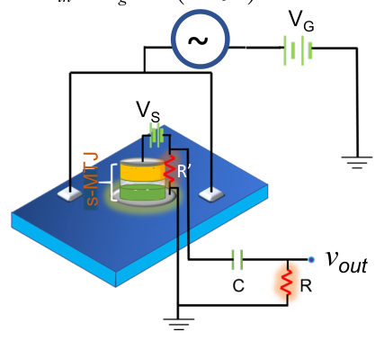
<figcaption class="paper-figure-caption"><b>Fig 5.</b> Fig. 5. The ac amplifier circuit realized with a single s-MTJ.</figcaption>
</figure>
</div>

<p><strong>Summary.</strong> This paper proposes using a straintronic magnetic tunnel junction (s-MTJ) as a highly tunable analog AC voltage amplifier. The device's gain is uniquely dependent on an external supply voltage, offering advantages over fixed-gain transistors. By analyzing the magnetization dynamics, the authors derive the amplification characteristics and suggest structural modifications to enhance performance.</p>
<p><strong>Why it may be interesting.</strong> While focused on spintronics/electronics, the underlying physics involves non-linear dynamics (LLGL simulations) coupled to an external control parameter ($V_G$), which touches upon concepts of parametric amplification and controlled quantum/classical response relevant to open quantum systems.</p>
<details>
<summary>Detailed structure</summary>
<p><strong>Main problem.</strong> To demonstrate a novel analog AC voltage amplifier utilizing the unique properties of straintronic magnetic tunnel junctions (s-MTJs).</p>
<p><strong>Main result.</strong> The device exhibits linear amplification whose gain is tunable by an external power supply voltage, unlike traditional transistors.</p>
<p><strong>Method.</strong> The authors modeled the magnetization dynamics and derived the amplification factor based on superimposing a small AC voltage onto a DC bias point within the s-MTJ's linear conductance regime.</p>
<p><strong>Model / system.</strong> The system is a single straintronic magnetic tunnel junction (s-MTJ), whose resistance depends on the magnetization angle ($\phi$) and can be continuously tuned by an external gate voltage ($V_G$).</p>
<p><strong>Key observables.</strong> Output voltage $   ilde{V}$, amplification factor $A$, conductance swing, and maximum allowed AC input amplitude.</p>
<p><strong>Important parameters / regimes.</strong> The proportionality constant $\kappa$ (slope of linear conductance vs. $V_G$), the supply voltage $V_S$, and the ferromagnetic resonance frequency (GHz range).</p>
<p><strong>Assumptions / limitations.</strong> The amplification remains distortion-free only if the AC gate voltage excursion stays within the established linear region, and the signal frequency must be low enough relative to the magnetization dynamics.</p>
<p><strong>Figures summary.</strong> Figure 5 illustrates the relationship between output voltage and input gate voltage swing, showing the derived linear amplification formula.</p>
<p><strong>Paper structure.</strong> The paper first establishes the physical basis of s-MTJs for analog applications by noting their linear conductance region. It then models the AC amplification process, deriving the gain expression, and finally discusses methods to improve performance by modifying device geometry or material properties.</p>
</details>
<details>
<summary>Abstract</summary>
<p>Magnetic tunnel junctions (MTJs) are known for their digital applications (memory and logic). A special class of them called "straintronic" magnetic tunnel junctions (s-MTJ) has lately emerged as a potential platform for analog applications because their conductance can be varied continuously with mechanical strain generated with a gate voltage. The conductance versus gate voltage (transfer) characteristic always has a linear region and that can be leveraged for a variety of analog applications. Here, we discuss one such application, namely analog voltage amplification. If the s-MTJ's gate voltage is fixed around the midpoint of the linear region and a small ac voltage is superimposed on it, then the ac voltage can be amplified without distortion as long as its amplitude is small enough to avoid gate voltage excursion beyond the linear region. Unlike a transistor-based voltage amplifier whose amplification is determined solely by the transistor's internal parameters - namely the transconductance and Early resistance - here the amplification can be varied by an external power supply voltage. We examine the maximum allowed amplitude and frequency of input signal for distortion-free amplification by modeling the magnetization dynamics and derive an expression for the amplification.</p>
</details>
<p><sub><a href="#top">↑ back to top</a></sub></p>

<p><a id="paper-2607.00993"></a></p>
<h3 id="magnon-polaron-mediated-spin-seebeck-effect-in-altermagnets"><a href="http://arxiv.org/abs/2607.00993v1">Magnon-polaron mediated spin Seebeck effect in altermagnets</a></h3>
<p><strong>Authors:</strong> Ilia Moghayer, Ritesh Das, Yaroslav M. Blanter<br>
<strong>Type:</strong> theory · <strong>Category:</strong> other · <strong>PDF:</strong> <a href="https://arxiv.org/pdf/2607.00993v1">https://arxiv.org/pdf/2607.00993v1</a><br>
<strong>Analysis basis:</strong> full PDF text, analyzed in chunks
<strong>Topic relevance:</strong> <code>spintronics-quantum-optics interface</code> <strong>3/5</strong> · <code>Keldysh / 2PI / non-Gaussian methods</code> <strong>2/5</strong> · <code>non-equilibrium dynamics</code> <strong>2/5</strong> · <code>analog quantum simulation</code> <strong>1/5</strong> · <code>correlated / nonlocal dissipation</code> <strong>1/5</strong> · <code>driven-dissipative phase transition</code> <strong>1/5</strong> · <code>exotic spin models in light-matter</code> <strong>1/5</strong> · <code>methods for driven-dissipative</code> <strong>1/5</strong> · <code>non-equilibrium universality</code> <strong>1/5</strong></p>
<div class="figure-strip-hint">↔ Scroll figures horizontally</div>
<div class="paper-figures-scroll">
<figure class="paper-figure-card">
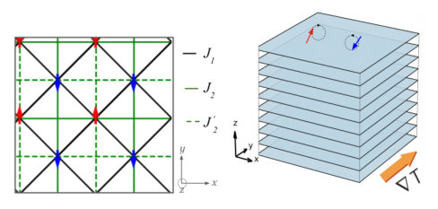
<figcaption class="paper-figure-caption"><b>Fig 1.</b> FIG. 1: (a) Lattice structure of the altermagnetic toy model. The lattice has a checkerboard shape with sites alternating between up and down spins. The alter- magnetic nature arises from the anisotropic next-nearest neighbor interaction (J2 ̸= J′ 2). (b) Schematic of spin Seebeck effect in the bulk altermagnetic system. The bulk consists of multiple altermagnetic monolayers cou- pled ferromagnetically to each other. A temperature gra- dient is applied along direction β (shown along y here) and the spin Seebeck response is measured along direc- tion α.</figcaption>
</figure>
<figure class="paper-figure-card">
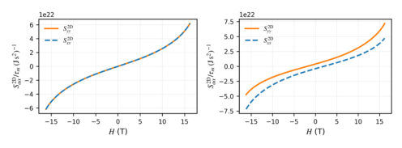
<figcaption class="paper-figure-caption"><b>Fig 2.</b> FIG. 2: Spin Seebeck coefficient S2D xx and S2D yy as a func- tion of applied magnetic field without phonon contribu- tions for (a) antiferromagnetic and (b) altermagnetic con- figurations in the 2D limit.</figcaption>
</figure>
<figure class="paper-figure-card">
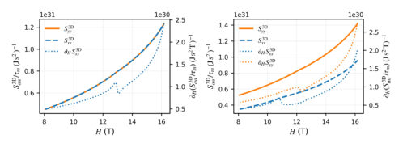
<figcaption class="paper-figure-caption"><b>Fig 3.</b> FIG. 4: SSE vs. applied magnetic field along different x and y directions with magnetoelastic coupling for (a) an antiferromagnetic lattice and (b) for an altermagnetic lattice in the 3D bulk case.</figcaption>
</figure>
<figure class="paper-figure-card">

<figcaption class="paper-figure-caption"><b>Fig 4.</b> FIG. 3: SSE vs. applied magnetic field in-plane along the x and y directions with magnetoelastic coupling for (a) an antiferromagnetic lattice and (b) for an altermagnetic lattice in the monolayer limit. Peaks in SSE are seen at the same magnetic field for the antiferromagnetic case in both S2D xx and S2D yy . For the altermagnetic case, the peak in S2D xx appears at a magnetic field different from the peak in S2D yy . The features are seen clearly by calculating the difference in SSE due to phonons (c) ∆Sxx and (d) ∆Syy vs. magnetic field. τm is the magnon lifetime.</figcaption>
</figure>
<figure class="paper-figure-card">
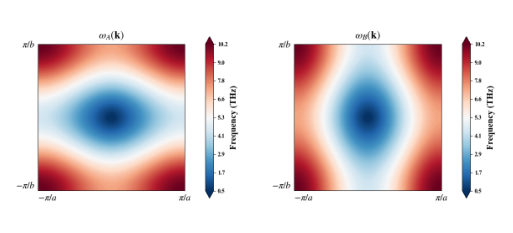
<figcaption class="paper-figure-caption"><b>Fig 5.</b> FIG. 2. Contour plot of the magnon dispersion in the toy model in the altermagnetic condition. The left panel rep- resents the dispersion of the A mode, while the right panel shows the B mode.</figcaption>
</figure>
</div>

<p><strong>Summary.</strong> This work proposes using the Spin Seebeck Effect (SSE) as a definitive experimental probe to identify altermagnetic materials. By modeling magnon-phonon coupling, the authors predict that altermagnets will exhibit unique directional anisotropy and field-dependent resonant peaks in the SSE that are absent or different in conventional antiferromagnets.</p>
<p><strong>Why it may be interesting.</strong> While focused on condensed matter magnetism, the use of quasiparticle descriptions (magnon-polarons) and non-equilibrium transport calculations touches upon concepts relevant to open quantum systems dynamics and energy/momentum transfer in correlated media.</p>
<details>
<summary>Detailed structure</summary>
<p><strong>Main problem.</strong> To find experimentally accessible transport signatures that can distinguish altermagnets from conventional ferromagnets or antiferromagnets.</p>
<p><strong>Main result.</strong> The Spin Seebeck Effect (SSE) exhibits pronounced directional anisotropy and resonant peaks whose positions depend on the measurement direction in altermagnets, providing a robust diagnostic signature.</p>
<p><strong>Method.</strong> Theoretical calculation using Boltzmann theory to model spin transport mediated by magnon-phonon hybridization. The analysis compares theoretical predictions for altermagnetic versus antiferromagnetic coupling regimes.</p>
<p><strong>Model / system.</strong> The study uses a minimal lattice Hamiltonian describing collinear magnets with compensated antiparallel spins (altermagnets). It incorporates magnetoelastic interactions leading to hybridized 'magnon-polaron' modes.</p>
<p><strong>Key observables.</strong> Spin Seebeck coefficient ($S_{\alphaeta}$), directional anisotropy of SSE ($S_{xx} 
eq S_{yy}$), and resonant peak positions as a function of applied magnetic field.</p>
<p><strong>Important parameters / regimes.</strong> External magnetic field strength ($H$), exchange couplings ($J_1, J_2, J'_2$), and phonon coupling strengths ($\Gamma, \kappa$).</p>
<p><strong>Assumptions / limitations.</strong> The analysis relies on the spin-wave approximation for magnon dynamics and assumes that magnon-polaron modes are well-defined quasiparticles.</p>
<p><strong>Figures summary.</strong> Figures compare magnon dispersion relations (A vs B modes) between altermagnetic ($J_2 
eq J'_2$) and antiferromagnetic ($J_2 = J'_2$) states, showing directional anisotropy in the SSE response as a function of magnetic field.</p>
<p><strong>Paper structure.</strong> The paper progresses from establishing the physical distinction between magnet types using magnon dispersion theory to calculating the measurable transport signature (SSE) by incorporating phonon coupling via the Boltzmann equation.</p>
</details>
<details>
<summary>Abstract</summary>
<p>Altermagnets, distinguished by compensated antiparallel spins yet nondegenerate magnon spectra, bridge the gap between ferromagnets and antiferromagnets. Although several probes such as anisotropic transport and spectroscopic measurements have been proposed to identify altermagnetic order, experimentally accessible transport signatures remain highly desirable. Here, we show that in altermagnets subject to an external magnetic field, the spin Seebeck effect exhibits pronounced directional anisotropy. Specifically, the spin Seebeck coefficient differs significantly along in-plane directions, and this anisotropy increases with field strength. Magnetoelastic interactions further produce resonant peaks whose positions with respect to an applied magnetic field reflect the intrinsic magnon band anisotropy, and provide localized features that enhance the distinguishability of the altermagnetic response. The peaks provide a robust experimental signature of altermagnetic order. Our findings serve as signatures of altermagnetic order while laying the groundwork for their application in spintronic devices.</p>
</details>
<p><sub><a href="#top">↑ back to top</a></sub></p>

<p><a id="paper-2607.00506"></a></p>
<h3 id="atom-selective-spin-polarized-transport-in-a-charge-ordered-altermagnet"><a href="http://arxiv.org/abs/2607.00506v1">Atom-selective spin-polarized transport in a charge-ordered altermagnet</a></h3>
<p><strong>Authors:</strong> Liu Yang, Yuan-Yuan Jiang, Xiao-Yan Guo, Yi-Dong Liu, Xian-Zhe Chen, Wen-Jian Lu, Yu-Ping Sun, Ming Li, Ding-Fu Shao<br>
<strong>Type:</strong> theory · <strong>Category:</strong> other · <strong>PDF:</strong> <a href="https://arxiv.org/pdf/2607.00506v1">https://arxiv.org/pdf/2607.00506v1</a><br>
<strong>Analysis basis:</strong> full PDF text, analyzed in chunks
<strong>Topic relevance:</strong> <code>spintronics-quantum-optics interface</code> <strong>3/5</strong> · <code>non-equilibrium dynamics</code> <strong>2/5</strong> · <code>Keldysh / 2PI / non-Gaussian methods</code> <strong>1/5</strong> · <code>Kondo &amp; dissipative impurity</code> <strong>1/5</strong> · <code>analog quantum simulation</code> <strong>1/5</strong> · <code>exotic spin models in light-matter</code> <strong>1/5</strong> · <code>methods for driven-dissipative</code> <strong>1/5</strong></p>
<div class="figure-strip-hint">↔ Scroll figures horizontally</div>
<div class="paper-figures-scroll">
<figure class="paper-figure-card">

<figcaption class="paper-figure-caption"><b>Fig 1.</b> Fig. 1: (a,b) The crystal structures of α-Fe2PO5 with the coordination polyhedra around Fe emphasized in (a) top view and (b) side view of FeAO6 octahedra. The dashed black lines indicate the unit cell. (c) The first Brillouin zone of α-Fe2PO5.</figcaption>
</figure>
<figure class="paper-figure-card">
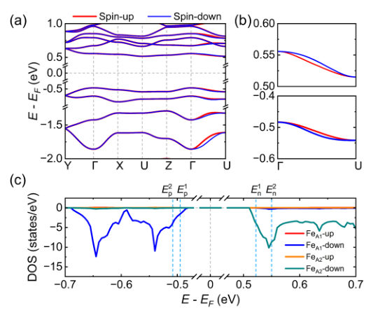
<figcaption class="paper-figure-caption"><b>Fig 2.</b> Fig. 2: (a) The band structure of α-Fe2PO5. (b) The en-larged band structure along the Γ-U high-symmetry path. (c) The FeA-resolved density of states of contributed by the valence and conduction bands.</figcaption>
</figure>
<figure class="paper-figure-card">

<figcaption class="paper-figure-caption"><b>Fig 3.</b> Fig. 3: (a-d) Three-dimensional constant-energy surfaces for spin-up and spin-down states at representative n- and p-doped energies and the ܓ∥-resolved spin polarization ݌∥(ܓ∥) for transport along the [010] direction. Gray regions denote momenta without available conducting channels, where ܰ∥</figcaption>
</figure>
<figure class="paper-figure-card">

<figcaption class="paper-figure-caption"><b>Fig 4.</b> Fig. 4: Real-space bond-resolved transport in doped α-Fe2PO5. (a,b) Bond charge transmission ܶ௜௝ and (c,d) bond spin transmission ܶ௜௝</figcaption>
</figure>
<figure class="paper-figure-card">
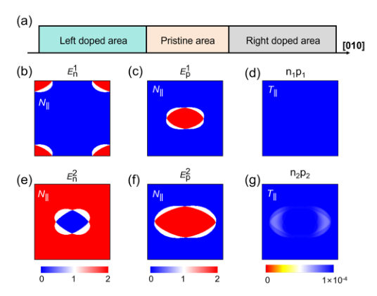
<figcaption class="paper-figure-caption"><b>Fig 5.</b> Fig. 5: (a) Schematic of the proposed α-Fe2PO5 junction, consisting of left and right doped regions separated by a pristine insulating region. The labels ݊ଵ݊ଵ, ݊ଶ݊ଶ, ݌ଵ݌ଵ, and ݌ଶ݌ଶ denote junctions in which both electrodes are doped to the same representative electron- or hole-doped energies, ܧ௡</figcaption>
</figure>
</div>

<p><strong>Summary.</strong> This work reveals that spin-polarized transport in the altermagnet $\alpha$-Fe$_2$PO$_5$ is governed by real-space, atom-selective conduction channels rather than just momentum-space splitting. By exploiting charge ordering to create distinct $   ext{Fe}^{2+}$ and $ ext{Fe}^{3+}$ sites, researchers show how doping can switch the current flow between these specific atomic pathways, enabling highly controllable spintronic devices.</p>
<p><strong>Why it may be interesting.</strong> While focused on condensed matter magnetism, the core concept—controlling quantum transport via engineered local chemical potential (doping) to select specific atomic pathways—is highly relevant for understanding open quantum systems where boundary conditions or site chemistry dictate coherence and current flow.</p>
<details>
<summary>Detailed structure</summary>
<p><strong>Main problem.</strong> To investigate spin-polarized transport in altermagnets by moving beyond conventional momentum-space descriptions to focus on real-space spin selectivity.</p>
<p><strong>Main result.</strong> The study demonstrates that charge ordering creates atom-selective conduction channels ($  ext{Fe}^{3+}$ vs $  ext{Fe}^{2+}$) which enable highly controllable, spin-polarized transport in the altermagnet $\alpha$-Fe$_2$PO$_5$. This mechanism allows for orders-of-magnitude conductance modulation via junction design.</p>
<p><strong>Method.</strong> The research employs first-principles calculations (DFT/GGA+U) combined with non-equilibrium Green’s function (NEGF) formalism to simulate quantum transport.</p>
<p><strong>Model / system.</strong> The system is the charge-ordered altermagnet $\alpha$-Fe$_2$PO$_5$, which possesses a puckered C-type antiferromagnetic stacking and exhibits inequivalent $    ext{Fe}^{2+}$ and $ ext{Fe}^{3+}$ sites due to charge ordering.</p>
<p><strong>Key observables.</strong> Spin-resolved transmission coefficients ($\mathcal{T}^{\sigma}$), local conductance, spin polarization on sublattices, and junction conductance modulation (ON/OFF ratio).</p>
<p><strong>Important parameters / regimes.</strong> Electron/hole doping levels ($n$ or $p$), the nature of the active atomic sites ($    ext{Fe}^{2+}$ vs $  ext{Fe}^{3+}$), and the degree of spin splitting near the Fermi level.</p>
<p><strong>Assumptions / limitations.</strong> The primary assumption is that real-space connectivity (atom selectivity) dictates transport properties even when momentum-space spin splitting is weak.</p>
<p><strong>Figures summary.</strong> Figures illustrate crystal structures, band/DOS showing weak splitting, constant-energy surfaces for spin states, and schematic representations of bond-resolved transmission ($\mathcal{T}$ vs $\mathcal{T}^{\sigma}$) under different doping conditions in a tunnel junction model.</p>
<p><strong>Paper structure.</strong> The paper progresses from establishing the limitations of momentum-space analysis to identifying real-space charge/spin selectivity due to site inequivalence, demonstrating this through transport calculations, and finally proposing an all-in-one tunnel junction device concept based on channel matching.</p>
</details>
<details>
<summary>Abstract</summary>
<p>Altermagnets provide a promising platform for spin-polarized transport without net magnetization, but their transport properties are usually discussed in terms of momentum-space spin splitting. Here, using first-principles calculations and quantum transport simulations, we show that the charge-ordered altermagnet $α$-Fe$_2$PO$_5$ exhibits a distinct form of real-space spin selectivity despite weak altermagnetic spin splitting near the Fermi level. The charge order creates inequivalent Fe$^{2+}$ and Fe$^{3+}$ sites within each sublattice, while the puckered C-type antiferromagnetic stacking suppresses inter-sublattice transport. As a result, electron and hole doping activate spin-polarized transport predominantly through Fe$^{3+}$- and Fe$^{2+}$-based channels, respectively. These atom-selective channels carry opposite spin polarizations on the two antiferromagnetic sublattices, giving rise to a globally compensated charge current with hidden Néel spin character. We further propose an all-in-one $α$-Fe$_2$PO$_5$ tunnel junction, where matching or mismatching atom-selective conduction channels yields orders-of-magnitude conductance modulation. Our findings establish a real-space design principle for atomically controlled spin functionality and spintronic devices.</p>
</details>
<p><sub><a href="#top">↑ back to top</a></sub></p>

<p><a id="paper-2607.00807"></a></p>
<h3 id="electrical-control-of-spin-photocurrent-in-a-magnetoelectric-oxide-crmath1116mathomath1117math"><a href="http://arxiv.org/abs/2607.00807v1">Electrical control of spin photocurrent in a magnetoelectric oxide Cr$_2$O$_3$</a></h3>
<p><strong>Authors:</strong> Zhuo-Cheng Gu, Hiroaki Ishizuka<br>
<strong>Type:</strong> theory · <strong>Category:</strong> other · <strong>PDF:</strong> <a href="https://arxiv.org/pdf/2607.00807v1">https://arxiv.org/pdf/2607.00807v1</a><br>
<strong>Analysis basis:</strong> full PDF text, analyzed in chunks
<strong>Topic relevance:</strong> <code>exotic spin models in light-matter</code> <strong>3/5</strong> · <code>spintronics-quantum-optics interface</code> <strong>3/5</strong> · <code>Keldysh / 2PI / non-Gaussian methods</code> <strong>1/5</strong> · <code>driven-dissipative phase transition</code> <strong>1/5</strong> · <code>methods for driven-dissipative</code> <strong>1/5</strong> · <code>non-equilibrium dynamics</code> <strong>1/5</strong></p>
<div class="figure-strip-hint">↔ Scroll figures horizontally</div>
<div class="paper-figures-scroll">
<figure class="paper-figure-card">

<figcaption class="paper-figure-caption"><b>Fig 1.</b> FIG. 1. A schematic of the spin chain with spin canting and its magnon dispersion. (a) A noncentrosymmetric quasi-one- dimensional model composed of weakly coupled spin chains with the nearest-neighbor interactions, J1 and J5, and a dis- placement δ. (b) A schematic of the spin chain studied in Sec. III. The numbers u = 1–4 on each site denote the sublat- tice, θ is the angle of canting induced by the DMI, and (x, y, z) and (x0, y0, z0) are the global and local coordinates, respec- tively. (c) Magnon dispersion of the spin chain for Ex = 0 and Ex = 5 (θ = 4.77◦) with λ = 0.05. The results are for J1 = −1, J5 = −0.5, Dz = 0.005, and δ = 0.1.</figcaption>
</figure>
<figure class="paper-figure-card">

<figcaption class="paper-figure-caption"><b>Fig 2.</b> FIG. 2. Nonlinear spin current conductivity for Sz through the one-magnon process along the α (α = x0, y0, z0) direction under a static electric field Ex. Frequency dependence of (a) [σ(2)]z xx¯x0, (b) [σ(2)]z yy, and (c) [σ(2)]z zz¯x0. The results are obtained for J1 = −1, J5 = −0.5, Dz = 0.005, δ = 0.1, η = ω1(k = 0, E = 0) ≈0.01, and λ = 0.05. The canting angles corresponding to λEx/J1 = 1, 3, and 5 are θ = 0.95◦, 2.86◦, and 4.77◦, respectively.</figcaption>
</figure>
<figure class="paper-figure-card">
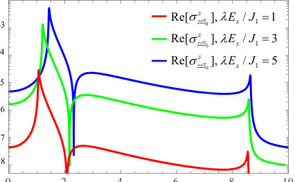
<figcaption class="paper-figure-caption"><b>Fig 3.</b> FIG. 3. Nonlinear spin current conductivity for the 1D model in Eq. 20 induced by the two-magnon process; (a) σz xx¯z0 and (b) σz zz¯z0. Each line is the conductivity with different electric fields E = 1(red), 3 (green), and 5 (blue). The canting angles corresponding to λEx/J1 = 1, 3, and 5 are θ = 0.95◦, 2.86◦, and 4.77◦, respectively. Frequency dependence of the spin conductivity for J1 = −1, J5 = −0.5, Dz = 0.005, δ = 0.1, λ = 0.05, and η = ω1(k = 0, E = 0) ≈0.01.</figcaption>
</figure>
<figure class="paper-figure-card">

<figcaption class="paper-figure-caption"><b>Fig 4.</b> FIG. 5. Nonlinear spin current conductivities σz xx(0; ω, −ω) and σz zz(0; ω, −ω). (a) Frequency dependence of [σ(2)]z xxand its (b) one-magnon and (c) two-magnon contributions. (d) Frequency dependence of [σ(2)]z zz and (e) the one-magnon and (f) the two-magnon processes. The canting angle θ for E = 1, 3, and 5 are θ = 0.09◦, 0.24◦, and 0.39◦, respectively. The results are for Gilbert damping α = 0.02, J1 = −7.53 meV, J2 = −3.41 meV, J3 = −0.08 meV, J4 = 0.02 meV, J5 = −0.19 meV, Dz = 0.0015 meV, η = 0.02E1(k = 0) meV, and λ = 0.05. The unit of product λE is energy scale (meV).</figcaption>
</figure>
<figure class="paper-figure-card">

<figcaption class="paper-figure-caption"><b>Fig 5.</b> FIG. 4. The crystal structure and magnon dispersion of Cr2O3. (a) The lattice structure viewed from the z axis. The A, B, and C chains correspond to the respective chains in (a). The dashed rhombus shows the unit cell of Cr2O3. (b) A schematic of the crystal structure and exchange interactions J1-J5 viewed from the y axis. Numbers in the parentheses indicate the number of bonds. (c) Magnon dispersion for the model in Eq. (28) with E = 0 (red) and E = 10 (dashed green), where the unit of the product λE is meV and λ = 0.05. The results are for J1 = −7.53 meV, J2 = −3.41 meV, J3 = −0.08 meV, J4 = 0.02 meV, J5 = −0.19 meV [19], and Dz = 0.0015 meV [26, 27]. Enlarged views of the lower magnon...</figcaption>
</figure>
</div>

<p><strong>Summary.</strong> The paper theoretically demonstrates that the magnon spin photocurrent in magnetoelectric oxides like $    ext{Cr}_2   ext{O}_3$ can be controlled by an external electric field. Using nonlinear response theory, the authors show that the DMI mediates this control, leading to electrically tunable spin photovoltaic effects via both one- and two-magnon processes.</p>
<p><strong>Why it may be interesting.</strong> This work bridges concepts from nonlinear optics (second-order response), magnetism (magnons/spintronics), and ferroelectricity (magnetoelectric coupling) in a solid-state context, which is highly relevant to quantum materials research.</p>
<details>
<summary>Detailed structure</summary>
<p><strong>Main problem.</strong> The study investigates how an external electric field can electrically control the magnon spin photocurrent in magnetoelectric oxides.</p>
<p><strong>Main result.</strong> The research demonstrates that the Dzyaloshinskii–Moriya interaction (DMI) plays a key role, allowing for electrical tuning of the spin-current conductivity and confirming $  ext{Cr}_2   ext{O}_3$ as a promising platform for tunable spin photovoltaic effects.</p>
<p><strong>Method.</strong> Nonlinear response theory is employed to calculate the second-order spin current conductivity ($\sigma^{(2)}$), considering both one-magnon and two-magnon excitation processes.</p>
<p><strong>Model / system.</strong> The primary system analyzed is $    ext{Cr}_2   ext{O}_3$, modeled using a general spin Hamiltonian that incorporates exchange interactions, anisotropy, and the electric-field induced DMI term. The analysis progresses from 1D effective models to realistic 3D lattice descriptions.</p>
<p><strong>Key observables.</strong> Nonlinear spin current conductivity ($\sigma^{(2)}_{\mu
u\lambda}$), resonance frequencies, peak intensities, and the continuum spectrum resulting from two-magnon processes.</p>
<p><strong>Important parameters / regimes.</strong> Electric field strength ($E$), Dzyaloshinskii–Moriya coupling constant ($\lambda$), and magnon excitation energies ($\omega$).</p>
<p><strong>Assumptions / limitations.</strong> The analysis relies on spin-wave theory approximations, treating the system as bosonic magnons, and making specific assumptions about the validity of certain operators in the current calculation.</p>
<p><strong>Figures summary.</strong> Figures illustrate schematic models (1D/3D), magnon dispersion relations under electric fields, and spectral plots comparing one-magnon and two-magnon contributions to spin conductivity ($\sigma_{z}^{xx}, \sigma_{z}^{zz}$).</p>
<p><strong>Paper structure.</strong> The paper develops the theoretical framework using nonlinear response theory for bosonic systems, derives expressions for $\sigma^{(2)}$ from both one- and two-magnon terms, models the system using 1D and 3D spin Hamiltonians, and finally analyzes the field dependence of the resulting spectral features.</p>
</details>
<details>
<summary>Abstract</summary>
<p>Controlling magnetism by electric field or current is a central topic in spintronics. In this work, we argue that the magnon spin photocurrent can also be controlled by the electric field in magnetoelectrics. Taking Cr$_2$O$_3$ as an example, we demonstrate how the spin current is modified by the electric field, using nonlinear response theory. We find that the Dzyaloshinsky--Moriya interaction induced by the applied field plays a key role in modifying spin-current conductivity, which exhibits pronounced anisotropy with respect to the light polarization. In particular, both the resonance frequency and the peak intensity show distinct dependences on the external electric field $E$, demonstrating electrical control of the spin photocurrent. In addition, we show that the two-magnon processes give rise to a continuum spectrum, a consequence of the field-induced spin canting. These results show that Cr$_2$O$_3$ is a promising platform for realizing electrically tunable spin photovoltaic effect.</p>
</details>
<p><sub><a href="#top">↑ back to top</a></sub></p>

<p><a id="paper-2607.00630"></a></p>
<h3 id="quench-of-chiral-superconductivity-by-quantum-phase-fluctuations-in-twisted-cuprate-bilayers"><a href="http://arxiv.org/abs/2607.00630v1">Quench of chiral superconductivity by quantum phase fluctuations in twisted cuprate bilayers</a></h3>
<p><strong>Authors:</strong> Yin Shi, Mengxian Zhao, Fei Yang, Miao Liu, Sheng Meng<br>
<strong>Type:</strong> theory · <strong>Category:</strong> strongly correlated electrons · <strong>PDF:</strong> <a href="https://arxiv.org/pdf/2607.00630v1">https://arxiv.org/pdf/2607.00630v1</a><br>
<strong>Analysis basis:</strong> full PDF text, analyzed in chunks
<strong>Topic relevance:</strong> <code>Keldysh / 2PI / non-Gaussian methods</code> <strong>3/5</strong> · <code>analog quantum simulation</code> <strong>1/5</strong> · <code>correlated / nonlocal dissipation</code> <strong>1/5</strong> · <code>driven-dissipative phase transition</code> <strong>1/5</strong> · <code>methods for driven-dissipative</code> <strong>1/5</strong> · <code>non-equilibrium dynamics</code> <strong>1/5</strong></p>
<div class="figure-strip-hint">↔ Scroll figures horizontally</div>
<div class="paper-figures-scroll">
<figure class="paper-figure-card">

<figcaption class="paper-figure-caption"><b>Fig 1.</b> FIG. 1. (a) Schematic of a twisted bilayer superconductor, where each layer alone is a d-wave superconductor, and the two layers are coupled through electron tunneling with an amplitude t. αk is the polar angle of the momentum k. The superconducting phase of each layer can be decomposed into a static part ±φ and a dynamical part ηl(r, τ) (dependent on the imaginary time τ). A nonzero φ (not integer multiple of π) signifies d + id′ chiral superconductivity. Crucially, fluctu- ations in the dynamical phases could renormalize the equilib- rium φ. (b–d) Free energy density (vertically shifted to match minima) with (blue solid line) and without (orange dashed line) phase fluctuations at zero...</figcaption>
</figure>
<figure class="paper-figure-card">

<figcaption class="paper-figure-caption"><b>Fig 2.</b> FIG. 2. Phase diagrams in the twist-angle–temperature plane with (left panel) and without (right panel) phase fluctuations for t = 10 meV. The false color represents the minimal super- conducting gap. The phase diagrams are symmetric about θ = 45◦. T 1L c is the superconducting transition temperature of a monolayer. The horizontal dotted line in the left panel indicates the lowest temperature reached in existing experi- ments [11]. The white line in the right panel delineates the normal–superconducting phase border, while the d–(d + id′) border is obvious by the false color.</figcaption>
</figure>
<figure class="paper-figure-card">

<figcaption class="paper-figure-caption"><b>Fig 3.</b> FIG. 3. Phase diagrams in the tunneling-amplitude– temperature plane with (left panel) and without (right panel) phase fluctuations. The twist angle is fixed at 45◦. The false color represents the minimal superconducting gap. The dot- ted line marks the realistic tunneling amplitude t = 10 meV. Note the different scales of the y axes.</figcaption>
</figure>
<figure class="paper-figure-card">

<figcaption class="paper-figure-caption"><b>Fig 4.</b> FIG. 4. Josephson gap with (left column) and without (right column) phase fluctuations for t = 10 meV. The dashed line delineates the d–(d+id′) border for the mean-field case, while such a border is obvious by the false color for the phase fluc- tuating case.</figcaption>
</figure>
</div>

<p><strong>Summary.</strong> The paper theoretically examines the stability of proposed chiral d+id' superconductivity in twisted cuprate bilayers against quantum phase fluctuations. The key finding is that these fluctuations severely destabilize the chiral state, forcing a first-order transition into a more conventional d-wave phase at low temperatures. This establishes quantum fluctuations as a critical constraint on realizing exotic superconducting symmetries in layered materials.</p>
<p><strong>Why it may be interesting.</strong> This work provides a concrete example of how collective quantum fluctuations fundamentally constrain exotic superconducting phases (like chiral superconductivity) predicted by simpler theories, which is relevant for understanding emergent order parameters in strongly correlated systems.</p>
<details>
<summary>Detailed structure</summary>
<p><strong>Main problem.</strong> The study investigates how quantum phase fluctuations fundamentally alter the predicted phase diagram of chiral d+id' superconductivity in twisted cuprate bilayers, particularly concerning Time-Reversal Symmetry Breaking (TRSB).</p>
<p><strong>Main result.</strong> Quantum phase fluctuations strongly suppress the stability of the chiral state, confining it to narrow windows of twist angle and ultra-low temperatures. This leads to a first-order transition into the regular d-wave state.</p>
<p><strong>Method.</strong> The authors derived the fluctuation-corrected free energy by integrating out long-wavelength phase fluctuations from a continuum microscopic model Hamiltonian.</p>
<p><strong>Model / system.</strong> The system is twisted cuprate bilayers, modeled using a continuum approach incorporating interlayer tunneling and Coulomb repulsion. The analysis focuses on how collective phase fluctuations renormalize the superconducting order parameters.</p>
<p><strong>Key observables.</strong> Minimal superconducting gap (2Delta_min), relative phase angle (2varphi), Josephson coupling strength (Delta_J), and the stability region in the twist-angle vs. Temperature plane.</p>
<p><strong>Important parameters / regimes.</strong> Low temperatures ($T/T_{1L}^c \lesssim 0.016$), specific interlayer tunneling strengths ($t$), and the twist angle ($ heta$).</p>
<p><strong>Assumptions / limitations.</strong> The analysis treats phase fluctuations by integrating out long-wavelength modes, which is appropriate for low temperatures; it also uses a simplified local form for the interlayer coupling.</p>
<p><strong>Figures summary.</strong> Figures illustrate how quantum phase fluctuations renormalize the free energy and equilibrium phase angle across different twist angles, showing the suppression of the chiral state's stability region.</p>
<p><strong>Paper structure.</strong> The paper proceeds by developing a fluctuation-corrected free energy functional for the superconducting order parameters. It then analyzes this functional to map out the resulting phase diagram in terms of temperature and twist angle, comparing mean-field predictions with fluctuation corrections.</p>
</details>
<details>
<summary>Abstract</summary>
<p>Following theoretical proposals of chiral $d+id'$ superconductivity in twisted cuprate bilayers, experimental signatures of time-reversal symmetry breaking (TRSB) remain highly controversial. Here we demonstrate that quantum phase fluctuations fundamentally reshape the phase diagram of this proposed chiral state. Unlike regular superconducting orders, the chiral $d+id'$ state requires long-range coherence of an interlayer phase degree of freedom and is therefore intrinsically vulnerable to phase fluctuations. Incorporating these fluctuations nearly eliminates the chiral phase over most parts of the phase diagram, restricting it to a narrow twist-angle window and ultra-low temperatures. The fluctuation-driven destruction of chirality produces a first-order transition into the $d$-wave state, giving rise to coexistence and metastability. Meanwhile, Josephson phase locking is strongly weakened at the TRSB quantum critical point, which sits well within the superconducting regime. More broadly, our work establishes quantum phase fluctuations as a fundamental constraint on the emergence of TRSB phases in low-dimensional layered quantum materials.</p>
</details>
<p><sub><a href="#top">↑ back to top</a></sub></p>

<p><a id="paper-2607.00396"></a></p>
<h3 id="modulation-of-anomalous-hall-angle-in-a-magnetic-topological-semimetal"><a href="http://arxiv.org/abs/2607.00396v1">Modulation of anomalous Hall angle in a magnetic topological semimetal</a></h3>
<p><strong>Authors:</strong> Jinying Yang, Yanxing Shang, Xingchen Liu, Yibo Wang, Xuebin Dong, Qingqi Zeng, Meng Lv, Shen Zhang, Yang Liu, Binbin Wang, Hongxiang Wei, Yizheng Wu, Stuart Parkin, Gangqin Liu, Claudia Felser, Enke Liu, Baogen Shen<br>
<strong>Type:</strong> both · <strong>Category:</strong> other · <strong>PDF:</strong> <a href="https://arxiv.org/pdf/2607.00396v1">https://arxiv.org/pdf/2607.00396v1</a><br>
<strong>Analysis basis:</strong> full PDF text, analyzed in chunks
<strong>Topic relevance:</strong> <code>spintronics-quantum-optics interface</code> <strong>3/5</strong> · <code>Kondo &amp; dissipative impurity</code> <strong>1/5</strong> · <code>analog quantum simulation</code> <strong>1/5</strong> · <code>exotic spin models in light-matter</code> <strong>1/5</strong> · <code>non-equilibrium dynamics</code> <strong>1/5</strong></p>
<div class="figure-strip-hint">↔ Scroll figures horizontally</div>
<div class="paper-figures-scroll">
<figure class="paper-figure-card">
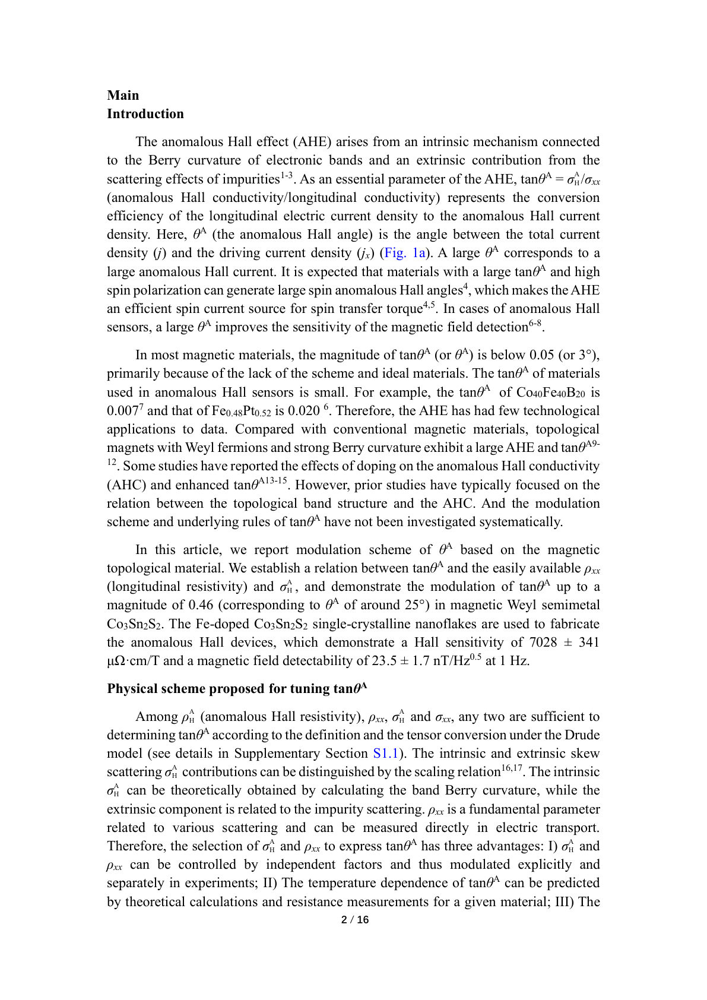
<figcaption class="paper-figure-caption"><b>Fig 1.</b> Low-resolution page preview, page 2</figcaption>
</figure>
<figure class="paper-figure-card">
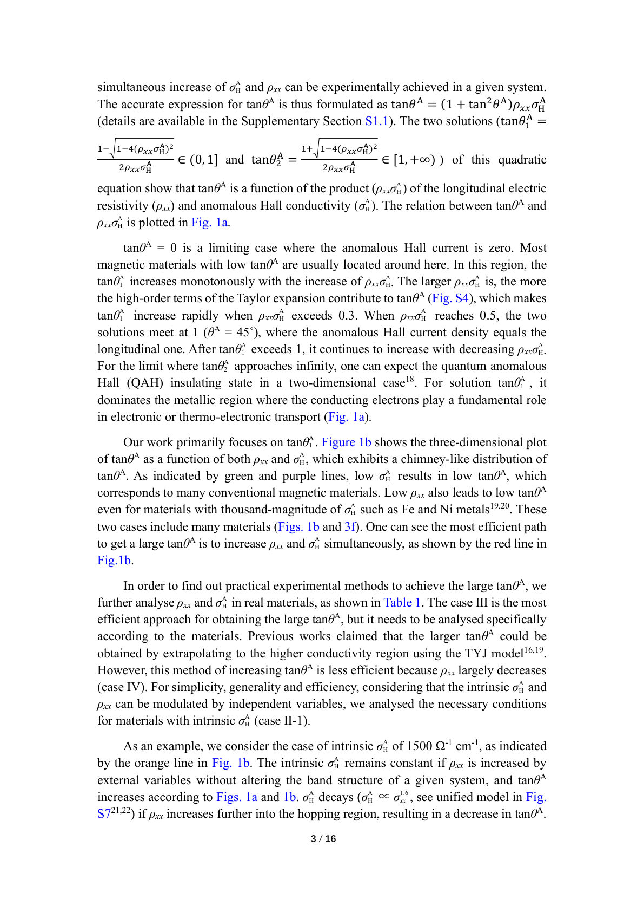
<figcaption class="paper-figure-caption"><b>Fig 2.</b> Low-resolution page preview, page 3</figcaption>
</figure>
<figure class="paper-figure-card">

<figcaption class="paper-figure-caption"><b>Fig 3.</b> Low-resolution page preview, page 4</figcaption>
</figure>
<figure class="paper-figure-card">
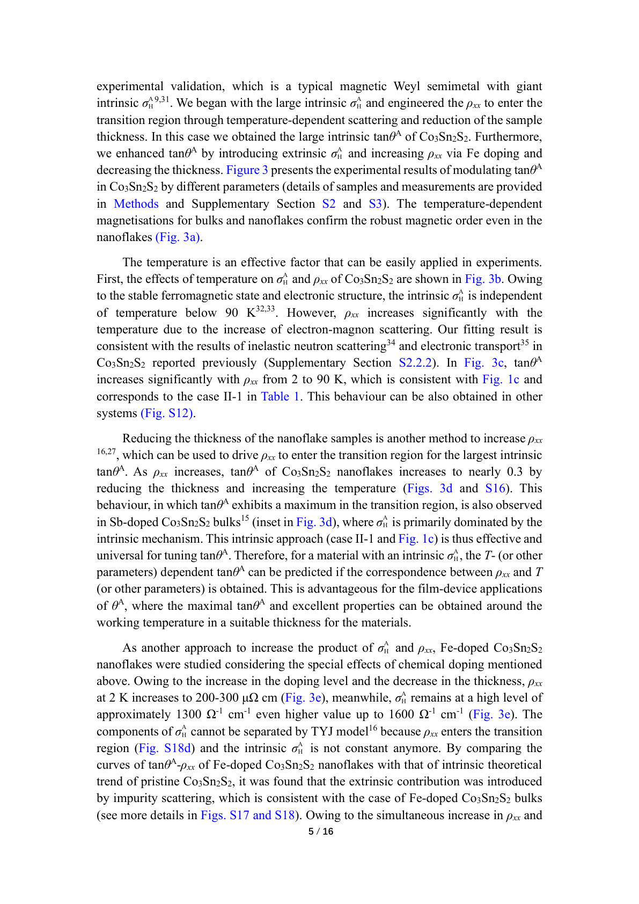
<figcaption class="paper-figure-caption"><b>Fig 4.</b> Low-resolution page preview, page 5</figcaption>
</figure>
<figure class="paper-figure-card">
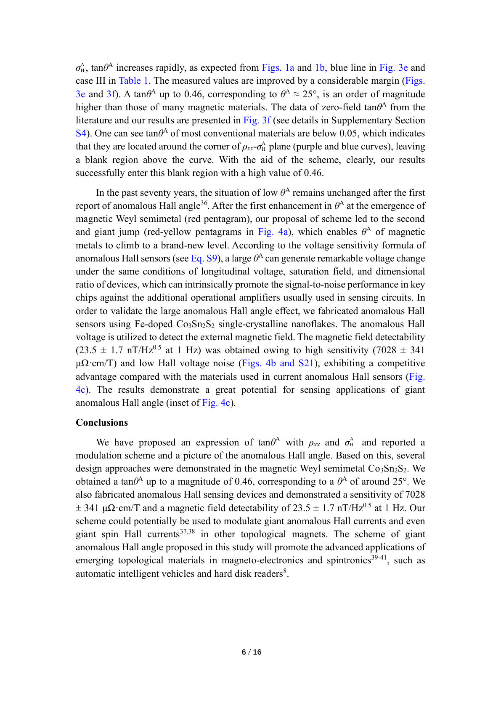
<figcaption class="paper-figure-caption"><b>Fig 5.</b> Low-resolution page preview, page 6</figcaption>
</figure>
</div>

<p><strong>Summary.</strong> This work reports on modulating the anomalous Hall angle ($    heta_A$) in magnetic Weyl semimetals using $    ext{Co}_3   ext{Sn}_2   ext{S}_2$. By theoretically linking $   an  heta_A$ to the product of resistivity and anomalous Hall conductivity, the authors experimentally achieved a large angle (~25°) through controlled doping and thickness reduction. This results in highly sensitive magnetic field detectors for spintronic applications.</p>
<p><strong>Why it may be interesting.</strong> While the core physics is condensed matter transport (magnetotransport), the ability to engineer a macroscopic parameter like $  heta_A$ through controlled material modification (doping/strain) has parallels in controlling coupling strengths or interaction parameters in quantum systems.</p>
<details>
<summary>Detailed structure</summary>
<p><strong>Main problem.</strong> The primary goal is to enhance the sensitivity of anomalous Hall sensors by maximizing the anomalous Hall angle ($    heta_A$), which quantifies current conversion efficiency.</p>
<p><strong>Main result.</strong> The authors successfully demonstrated modulation of $  an  heta_A$ up to a magnitude of 0.46 (an angle of ~25°) in magnetic Weyl semimetals, leading to high magnetic field detectability ($23.5 	ext{ nT}/	ext{Hz}^{0.5}$).</p>
<p><strong>Method.</strong> The study combines theoretical modeling relating $  an  heta_A$ to the product of resistivity and anomalous Hall conductivity ($
ho_{xx}\sigma^H_A$) with experimental measurements on fabricated nanoflakes.</p>
<p><strong>Model / system.</strong> The research focuses on magnetic Weyl semimetals, specifically $    ext{Co}<em xx>3   ext{Sn}_2   ext{S}_2$, which are synthesized into single-crystalline nanoflakes. Modulation is achieved by tuning both the intrinsic anomalous Hall conductivity ($\sigma^H_A$) and the longitudinal resistivity ($
ho</em>$) via doping or thickness reduction.</p>
<p><strong>Key observables.</strong> Anomalous Hall angle ($    an  heta_A$), Hall sensitivity ($7028 \mu\Omega\cdot	ext{cm/T}$), and magnetic field detectability ($23.5 	ext{ nT}/	ext{Hz}^{0.5}$).</p>
<p><strong>Important parameters / regimes.</strong> The maximum achievable $    an  heta_A$ is the key parameter, which depends on tuning both $
ho_{xx}$ and $\sigma^H_A$.</p>
<p><strong>Assumptions / limitations.</strong> The anomalous Hall angle relationship is modeled as being proportional to the product of electrical resistivity and anomalous Hall conductivity ($   an  heta_A \propto 
ho_{xx}\sigma^H_A$).</p>
<p><strong>Figures summary.</strong> Figures illustrate $   an  heta_A$ dependence on $
ho_{xx}$ and $\sigma^H_A$, showing optimal modulation paths, while other figures detail temperature and thickness dependencies of the AHE signal.</p>
<p><strong>Paper structure.</strong> The paper establishes the physical problem (enhancing $    heta_A$), develops a theoretical framework linking $    an  heta_A$ to material parameters ($
ho_{xx}, \sigma^H_A$), presents experimental results showing modulation via doping/thickness, and concludes with high-sensitivity device metrics.</p>
</details>
<details>
<summary>Abstract</summary>
<p>The anomalous Hall angle (θA) is a measure of the efficiency of converting a longitudinal driving current to a transverse spin-polarized Hall current. For anomalous Hall sensing, a large anomalous Hall angle can improve the sensitivity of magnetic field detection. However, modulation of this angle is challenging and magnetic materials typically have low angles of 0.1 to 3°. Here, we report modulation of the anomalous Hall angle in the magnetic Weyl semimetal Co3Sn2S2. We propose that the angle parameter tanθA can be formulated as a function of the product of electrical resistivity and anomalous Hall conductivity. Our scheme was utilized to demonstrate the modulation of tanθA up to a magnitude of 0.46, corresponding to an angle of around 25°. Microfabricated anomalous Hall devices using Fe-doped Co3Sn2S2 single-crystalline nanoflakes exhibit a high Hall sensitivity of 7028 μΩucm/T and a magnetic field detectability of 23.5 nT/Hz0.5 at 1 Hz.</p>
</details>
<p><sub><a href="#top">↑ back to top</a></sub></p>

<p><a id="paper-2607.00964"></a></p>
<h3 id="modification-of-damon-eshbach-magnetostatic-mode-spectra-in-ferromagnetparamagnet-bilayer"><a href="http://arxiv.org/abs/2607.00964v1">Modification of Damon-Eshbach magnetostatic mode spectra in ferromagnet/paramagnet bilayer</a></h3>
<p><strong>Authors:</strong> M. A. Kuznetsov<br>
<strong>Type:</strong> theory · <strong>Category:</strong> other · <strong>PDF:</strong> <a href="https://arxiv.org/pdf/2607.00964v1">https://arxiv.org/pdf/2607.00964v1</a><br>
<strong>Analysis basis:</strong> full PDF text, analyzed in chunks
<strong>Topic relevance:</strong> <code>spintronics-quantum-optics interface</code> <strong>3/5</strong> · <code>analog quantum simulation</code> <strong>1/5</strong> · <code>driven-dissipative phase transition</code> <strong>1/5</strong> · <code>exotic spin models in light-matter</code> <strong>1/5</strong></p>
<div class="figure-strip-hint">↔ Scroll figures horizontally</div>
<div class="paper-figures-scroll">
<figure class="paper-figure-card">

<figcaption class="paper-figure-caption"><b>Fig 1.</b> FIG. 1. Schematic illustration of the ferromag- net/paramagnet (FM/PM) bilayer. The spin wave in the FM film, with wave vector k at an angle θ to the x axis, is shown by a wavy arrow. The induced magnetization m in the PM is depicted by counterclockwise-rotating arrows.</figcaption>
</figure>
<figure class="paper-figure-card">

<figcaption class="paper-figure-caption"><b>Fig 2.</b> FIG. 2. Dependencies of the MSSW frequency shift ∆Ωon the wave vector modulus k (k ⊥M0) at different values of the magnetic permeability µ in the FM/PM bilayer.</figcaption>
</figure>
<figure class="paper-figure-card">

<figcaption class="paper-figure-caption"><b>Fig 3.</b> FIG. 3. Dependencies of (a) frequency Ωand (b) group velocity vg x of MSSWs on the x component of the wave vector kx (k ⊥M0) at different values of the magnetic permeability µ in the FM/PM bilayer. For the calculations, h = 0.1 (µc ≈3.32) and sM = 1 were adopted.</figcaption>
</figure>
<figure class="paper-figure-card">
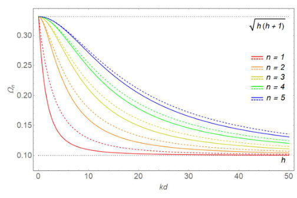
<figcaption class="paper-figure-caption"><b>Fig 4.</b> FIG. 4. Frequencies of the first five BVMSW modes Ωn as functions of the wave vector modulus k (k ∥M0) in the FM/PM bilayer. The solid lines correspond to the case µ →∞, while the dashed lines correspond to the case µ = 1. For the calculations, h = 0.1 was adopted.</figcaption>
</figure>
<figure class="paper-figure-card">

<figcaption class="paper-figure-caption"><b>Fig 5.</b> Figure 5 shows the dependencies of Ω± on µ at various θ [Fig. 5(a)] and the dependencies of Ω± on θ at various µ [Fig. 5(b)]. The light gray regions indicate the forbidden values of µ and θ where MSSWs cannot propagate. The curves Ω+ and Ω−reach the forbidden regions at µ = µ± c or θ = θc and terminate there. The branch Ω−at µ = µ− c reaches a local minimum equal to p</figcaption>
</figure>
</div>

<p><strong>Summary.</strong> This theoretical study analyzes spin wave propagation in a ferromagnet/paramagnet bilayer, showing that the dipolar coupling modifies the standard Damon-Eshbach modes. The key finding is that by tuning the material's magnetic permeability ($\mu$)—which can be controlled via temperature or external field near the Curie point—the surface spin waves can become unidirectional. This suggests the system is a promising platform for tunable magnonic logic devices.</p>
<p><strong>Why it may be interesting.</strong> While focused on magnetism, the concept of tunable wave directionality (unidirectionality) via material parameters ($\mu$) is analogous to controlling directional coupling in quantum optical or superconducting circuits, making it relevant for understanding engineered wave phenomena.</p>
<details>
<summary>Detailed structure</summary>
<p><strong>Main problem.</strong> To calculate and analyze the spectra of bulk and surface spin waves (Damon-Eshbach magnetostatic modes) in a ferromagnet/paramagnet bilayer, focusing on how dipolar coupling modifies these modes.</p>
<p><strong>Main result.</strong> The system exhibits tunable unidirectional wave regimes for surface spin waves when the magnetic permeability ($\mu$) exceeds a critical value ($\mu_c$), allowing potential use in magnonic logic devices.</p>
<p><strong>Method.</strong> Analytical solutions and numerical calculations were used to solve Laplace's equation under magnetostatic approximations, deriving dispersion relations for different propagation directions.</p>
<p><strong>Model / system.</strong> The system is an FM/PM bilayer where the PM susceptibility ($\chi$) varies significantly near its Curie temperature ($T_C$), leading to a variable magnetic permeability $\mu$. The analysis covers surface and bulk spin waves propagating in various directions relative to the magnetization.</p>
<p><strong>Key observables.</strong> Spin wave frequencies ($\Omega_n$), nonreciprocity ($\Delta\Omega$), group velocity ($v_g$), and the critical permeability values ($\mu_c$, $\mu_+^c$).</p>
<p><strong>Important parameters / regimes.</strong> Magnetic susceptibility ($\chi \propto 1/(T-T_C)$), external magnetic field ($h$), film thickness ($d$), and propagation angle ($ heta$).</p>
<p><strong>Assumptions / limitations.</strong> The magnetostatic approximation is used, assuming the system can be described by a scalar potential $\phi$. The PM's behavior near $T_C$ dictates the key parameter $\mu$.</p>
<p><strong>Figures summary.</strong> Figures illustrate the nonreciprocity ($\Delta\Omega 
eq 0$) for surface spin waves when $\mu 
eq 1$, show the onset of unidirectional behavior at $\mu > \mu_c$, and map out spectral regions for arbitrary propagation angles.</p>
<p><strong>Paper structure.</strong> The paper progresses from establishing the governing equations in the magnetostatic approximation to deriving specific dispersion relations for perpendicular ($\mathbf{k} \perp \mathbf{M}_0$) and general directions. It then analyzes the conditions for unidirectional wave propagation, discusses the spectral splitting between MSSW and BVMSW regimes, and concludes by linking tunability to temperature/field variations.</p>
</details>
<details>
<summary>Abstract</summary>
<p>Using the magnetostatic approximation, we calculate the spectra of bulk and surface spin waves in an in-plane magnetized ferromagnet/paramagnet bilayer. Due to the dipolar coupling between the layers, the paramagnet becomes polarized, which in turn modifies the spectrum of the Damon-Eshbach magnetostatic modes. We assume that the paramagnet is characterized by a magnetic susceptibility, $χ\propto 1/(T-T_C)$, which reaches large values when the system temperature $T$ is close to the Curie temperature $T_C$. We find the conditions under which surface spin waves become unidirectional, i.e., capable of carrying energy in only one direction, and determine the magnitude of their frequency nonreciprocity. We demonstrate the possibility of switching the unidirectional wave regime on and off by varying the external magnetic field or temperature, making the ferromagnet/paramagnet system an attractive platform for tunable magnonic logic devices.</p>
</details>
<p><sub><a href="#top">↑ back to top</a></sub></p>

<p><a id="paper-2607.01160"></a></p>
<h3 id="electric-field-effects-on-defect-migration-energetics-in-gan"><a href="http://arxiv.org/abs/2607.01160v1">Electric-field effects on defect migration energetics in GaN</a></h3>
<p><strong>Authors:</strong> Farshid Reza, Hamdy Arkoub, Alexander S. Hauck, Adri C. T. van Duin, Miaomiao Jin<br>
<strong>Type:</strong> theory · <strong>Category:</strong> other · <strong>PDF:</strong> <a href="https://arxiv.org/pdf/2607.01160v1">https://arxiv.org/pdf/2607.01160v1</a><br>
<strong>Analysis basis:</strong> full PDF text, analyzed in chunks
<strong>Topic relevance:</strong> <code>non-equilibrium dynamics</code> <strong>2/5</strong> · <code>Keldysh / 2PI / non-Gaussian methods</code> <strong>1/5</strong> · <code>analog quantum simulation</code> <strong>1/5</strong> · <code>correlated / nonlocal dissipation</code> <strong>1/5</strong> · <code>driven-dissipative phase transition</code> <strong>1/5</strong> · <code>methods for driven-dissipative</code> <strong>1/5</strong> · <code>non-equilibrium universality</code> <strong>1/5</strong></p>
<div class="figure-strip-hint">↔ Scroll figures horizontally</div>
<div class="paper-figures-scroll">
<figure class="paper-figure-card">

<figcaption class="paper-figure-caption"><b>Fig 1.</b> FIG. 1: EOS data for wurtzite GaN (a), N2 molecule bond length energy profile</figcaption>
</figure>
<figure class="paper-figure-card">
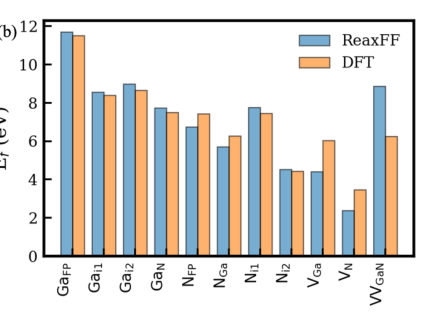
<figcaption class="paper-figure-caption"><b>Fig 2.</b> FIG. 2: (a) Energy difference between defect structure and perfect structure. (b)</figcaption>
</figure>
<figure class="paper-figure-card">
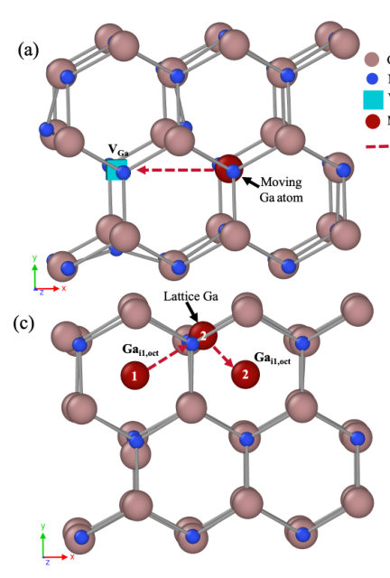
<figcaption class="paper-figure-caption"><b>Fig 3.</b> FIG. 3: Migration directions for (a) VGa, (b) VN, (c) Gai1,oct, and (d) Ni2,split,</figcaption>
</figure>
<figure class="paper-figure-card">
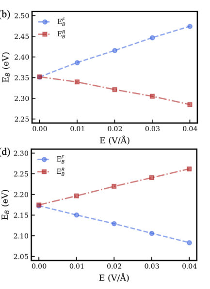
<figcaption class="paper-figure-caption"><b>Fig 4.</b> FIG. 4: Effect of an external electric field on the total system energy relative to zero</figcaption>
</figure>
<figure class="paper-figure-card">

<figcaption class="paper-figure-caption"><b>Fig 5.</b> FIG. 5: Charge distribution variation with applied electric field along x-direction for</figcaption>
</figure>
</div>

<p><strong>Summary.</strong> This work develops and applies a reactive force field model to study defect migration in GaN under high electric fields. The key finding is that the interaction between the field, charge, and lattice structure is highly nonlinear and anisotropic. This complexity suggests that simple linear models fail to predict defect mobility accurately in operational electronic devices.</p>
<p><strong>Why it may be interesting.</strong> While focused on solid-state defects rather than quantum information, the core concept—analyzing non-linear responses in a system due to external driving forces (electric field)—mirrors concepts in open quantum systems where environmental coupling leads to non-Markovian or complex dynamics.</p>
<details>
<summary>Detailed structure</summary>
<p><strong>Main problem.</strong> The study aims to predict device reliability by understanding how external electric fields modulate defect transport energetics within Gallium Nitride (GaN).</p>
<p><strong>Main result.</strong> Electric fields do not induce a simple linear bias; instead, they cause anisotropic and complex modifications to migration barriers via charge-lattice coupling. This nonlinearity arises from field-induced partial charge redistribution and local lattice distortion.</p>
<p><strong>Method.</strong> The research utilizes a custom ReaxFF reactive force field, trained on DFT data, coupled with Molecular Dynamics (MD) simulations and the Climbing-Image Nudged Elastic Band (CI-NEB) method to calculate defect barriers under applied fields.</p>
<p><strong>Model / system.</strong> The physical system is Gallium Nitride (GaN), modeled using supercells containing various intrinsic point defects, including vacancies ($   ext{V}<em ext_N="ext{N">{    ext{Ga}},   ext{V}</em>$) and interstitials. The methodology simulates the material response to electric fields up to $40 	ext{ MV/cm}$.}</p>
<p><strong>Key observables.</strong> Defect formation and migration energies ($ ext{E}<em ext_R="ext{R">{    ext{F}}^{   ext{B}}$, $ ext{E}</em>$), lattice parameters, partial charge redistribution, and local lattice distortion.}}^{   ext{B}</p>
<p><strong>Important parameters / regimes.</strong> Applied electric field strength ($0$ to $0.04 	ext{ V}/	ext{\AA}$); defect type (vacancy vs. interstitial).</p>
<p><strong>Assumptions / limitations.</strong> The use of the QEq scheme limits the analysis to neutral defects, neglecting the full complexity of charge-state transitions ($  ext{V}^{3-}$ etc.). The ReaxFF potential is assumed accurate for capturing dynamic coupling effects.</p>
<p><strong>Figures summary.</strong> Figures illustrate comparisons of Equation-of-State data (ReaxFF vs. DFT), and show how applied electric fields affect migration barriers, highlighting the non-linear changes in energy profiles for different defect types.</p>
<p><strong>Paper structure.</strong> The paper first develops and validates a ReaxFF force field against known structural properties. It then applies this model to calculate zero-field defect energetics, followed by systematic investigation of how applied electric fields modulate these migration barriers, comparing linear dipole approximations with complex charge-lattice coupling effects.</p>
</details>
<details>
<summary>Abstract</summary>
<p>A predictive understanding of defect transport in GaN under operating electric fields is critical for assessing device reliability in high-power and radiation environments. In this work, a ReaxFF reactive force field for GaN is developed using a density-functional-theory training set that includes structural, thermodynamic, and defect properties. The force field yields various properties such as lattice parameters, cohesive energies, and defect formation and migration energies in close agreement with prior first-principles and experimental results. Under externally applied electric fields, we find that migration barriers can be strongly modulated, with changes that depend on defect type and field orientation. Notably, the electric fields do not simply linearly bias defect motion in GaN, but can anisotropically modify migration barriers through charge-lattice coupling, leading to nonlinear transport behavior. The response arises from field-induced partial charge redistribution and local lattice distortion. These results demonstrate that electric fields can complexly modify the defect migration landscape, providing new insight into defect transport in GaN under high-field conditions.</p>
</details>
<p><sub><a href="#top">↑ back to top</a></sub></p>

<p><a id="paper-2607.00683"></a></p>
<h3 id="facet-selective-ballistic-supercurrent-in-a-weak-topological-insulator"><a href="http://arxiv.org/abs/2607.00683v1">Facet-selective ballistic supercurrent in a weak topological insulator</a></h3>
<p><strong>Authors:</strong> Prasanna Rout, Ankit Khola, Lalit Pandey, Paolo Sessi, Xiaochun Huang, Ivo Cools, S. Galeski, Matthias Bode, Johan Åkerman, Floriana Lombardi, Thilo Bauch, Saroj P. Dash<br>
<strong>Type:</strong> experiment · <strong>Category:</strong> other · <strong>PDF:</strong> <a href="https://arxiv.org/pdf/2607.00683v1">https://arxiv.org/pdf/2607.00683v1</a><br>
<strong>Analysis basis:</strong> full PDF text, analyzed in chunks
<strong>Topic relevance:</strong> <code>QC/QI experiment</code> <strong>2/5</strong> · <code>spintronics-quantum-optics interface</code> <strong>2/5</strong> · <code>Kondo &amp; dissipative impurity</code> <strong>1/5</strong> · <code>analog quantum simulation</code> <strong>1/5</strong> · <code>interference shaping light</code> <strong>1/5</strong> · <code>non-equilibrium dynamics</code> <strong>1/5</strong></p>
<div class="figure-strip-hint">↔ Scroll figures horizontally</div>
<div class="paper-figures-scroll">
<figure class="paper-figure-card">

<figcaption class="paper-figure-caption"><b>Fig 1.</b> Fig. 1: Probing the boundary states in three-dimensional topological insulators by super- conducting quantum interferometry. a, b, Schematic band structure of a strong topological insulator (STI, a), and a weak topological insulator (WTI, b). An STI hosts gapless Dirac cones on the time- reversal-symmetric crystal facets (pink surfaces) while the bulk is insulating. In a WTI, conducting surface states due to one-dimensional Dirac lines reside only on specific crystallographic facets such as y–z and z–x (pink surfaces), whereas other x–y facets (blue surfaces) remain fully gapped. c, d, Josephson junc- tions based on an STI and a WTI coupled to superconducting electrodes. In the STI junction...</figcaption>
</figure>
<figure class="paper-figure-card">
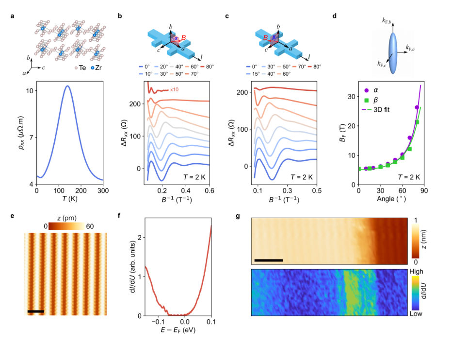
<figcaption class="paper-figure-caption"><b>Fig 2.</b> Fig. 2: Electronic transport and spectroscopic measurements of ZrTe5. a, Temperature depen- dence of the longitudinal resistivity ρxx measured with current applied along the a-axis. The top panel shows the crystal structure of ZrTe5, consisting of two-dimensional layers in the a–c plane that are cou- pled by van der Waals forces along the b-axis. In the WTI regime, the a–c surfaces are gapped, while topological surface states reside on the a–b and b–c facets. b, c, Magnetoresistance ∆Rxx(B) after back- ground subtraction, measured at 2 K for various field angles α in the a–b plane and β in the b–c plane. Here, α and β denote the angle between the b-axis and the magnetic field as illustrated...</figcaption>
</figure>
<figure class="paper-figure-card">

<figcaption class="paper-figure-caption"><b>Fig 3.</b> Fig. 3: Supercurrent transport in ZrTe5 Josephson junctions. a,b, Voltage V across the Al/ZrTe5 junction as a function of applied current I flowing along the a-axis, measured at different temperatures. The data for Dev 1 and Dev 2 are presented in a and b, respectively. c, V (I) curves for the NbN/ZrTe5 junction (Dev 3), where the current is along the c-axis. The top panels in a-c show scanning electron microscopy images of the junctions with the measurement schematics (Scale bar is 2 µm). d, Temperature dependence of Ic for three junctions, extracted from a-c, together with fits (dashed lines) to the data in the high-temperature regime.</figcaption>
</figure>
<figure class="paper-figure-card">
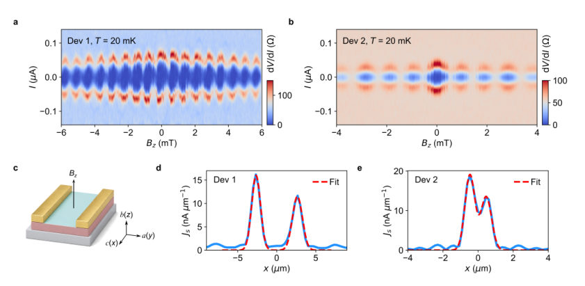
<figcaption class="paper-figure-caption"><b>Fig 4.</b> Fig. 4: Superconducting quantum interferometry revealing spatially localized supercurrent in Al/ZrTe5 junctions. Superconducting quantum interference patterns for Dev 1 (a), and Dev 2 (b) measured at 20 mK, exhibiting clear SQUID-like oscillations. c, Schematics of the junctions, where the current flows along the a-axis and the magnetic field is applied along the b-axis. d,e, Corresponding supercurrent density profiles Js(x) extracted from the interference patterns in a,b. Two pronounced peaks indicate that the supercurrent is localized near opposite a–b facets. The spatial supercurrent distributions are fitted by a combination of two Gaussian peaks (dashed lines).</figcaption>
</figure>
<figure class="paper-figure-card">

<figcaption class="paper-figure-caption"><b>Fig 5.</b> Fig. 5: Field-orientation dependence of facet-selective supercurrent. a, Schematic of the NbN/ZrTe5 Josephson junction (Dev 3), where the current flows along the c-axis. b, Superconducting interference patterns measured at 20 mK for magnetic field Bz applied along the b-axis, showing behavior similar to that in Fig. 4. c, Same measurement performed for magnetic field By applied along the a-axis. d, The supercurrent density profiles for the parametrized junction width W = 1, 0.5, 0.3, 0.2, and 0.1. e,f, Corresponding simulated interference patterns for a sinusoidal (e) and a sawtooth (f) current–phase relation (see Supplementary Note 7 for details). For reference, a uniform supercurrent...</figcaption>
</figure>
</div>

<p><strong>Summary.</strong> The research demonstrates the existence of facet-selective ballistic supercurrent in weak topological insulators ($    ext{ZrTe}_5$) using Josephson junctions. By measuring SQUID oscillations and analyzing field dependence, the authors prove that superconductivity is confined to specific crystal facets hosting topological surface states. This establishes WTIs as a promising material platform for building next-generation superconducting quantum devices.</p>
<p><strong>Why it may be interesting.</strong> This work provides a concrete platform for realizing topological superconductivity in engineered solid-state devices, directly linking bulk crystal topology to macroscopic superconducting properties, which is highly relevant for quantum device architectures.</p>
<details>
<summary>Detailed structure</summary>
<p><strong>Main problem.</strong> The primary goal is to demonstrate and characterize facet-selective ballistic supercurrent flowing through weak topological insulators (WTIs) in three dimensions.</p>
<p><strong>Main result.</strong> The authors successfully demonstrated that the supercurrent is spatially confined to specific crystallographic facets hosting gapless topological surface states, confirming WTI behavior and establishing these materials for facet-resolved superconducting devices.</p>
<p><strong>Method.</strong> Measurements involve using Josephson junctions formed with WTIs ($  ext{ZrTe}_5$) coupled to superconductors ($ ext{Al}$ or $   ext{NbN}$) and probing the supercurrent via quantum interferometry and transport measurements.</p>
<p><strong>Model / system.</strong> The system is based on Weak Topological Insulators (WTIs), specifically $   ext{ZrTe}_5$, which exhibit gapless topological surface states only on selected crystal facets, contrasting with Strong TIs. The physics involves proximity-induced superconductivity in these topological boundary states.</p>
<p><strong>Key observables.</strong> SQUID-like critical current oscillations ($\Phi$-periodicity), distinct interference patterns upon magnetic field rotation, exponential temperature dependence of $I_c$, and sharp lobes in the Current-Phase Relation (CPR).</p>
<p><strong>Important parameters / regimes.</strong> Low temperatures ($15 	ext{ mK}$ to $5.1 	ext{ K}$), superconducting critical currents ($I_c$), and magnetic field orientations ($\mathbf{B}_y$ vs $\mathbf{B}_z$).</p>
<p><strong>Assumptions / limitations.</strong> The supercurrent is assumed to be carried predominantly by the high-transmission topological surface channels, leading to ballistic transport signatures.</p>
<p><strong>Figures summary.</strong> Figures illustrate SQUID oscillations and extracted supercurrent density profiles showing confinement to specific facets; $V$-$I$ curves demonstrate temperature dependence of $I_c$; and STM/STS data confirm gapless states at step edges.</p>
<p><strong>Paper structure.</strong> The paper establishes the theoretical motivation by contrasting STI vs WTI surface state behavior, details the experimental setup using Josephson junctions on $   ext{ZrTe}_5$, presents transport measurements showing field-dependent supercurrent confinement, and concludes by confirming ballistic signatures via temperature dependence and CPR analysis.</p>
</details>
<details>
<summary>Abstract</summary>
<p>Topological superconductivity is widely pursued by inducing superconducting correlations in topologically protected boundary states. In two dimensions, this strategy has been realized using one-dimensional topological edge modes, but in three-dimensional crystals, spatially separated surface supercurrents confined to selected facets have not yet been achieved. Here we demonstrate facet-selective ballistic supercurrent in Josephson junctions based on the weak topological insulator ZrTe<sub>5</sub>. Superconducting quantum interferometry reveals SQUID-like critical current oscillations with flux-quantum periodicity, establishing that the supercurrent is spatially concentrated on specific crystallographic facets that host gapless topological surface states. Rotating the magnetic field yields markedly distinct interference patterns, linking the supercurrent distribution to the underlying bulk topology. The exponential temperature dependence of the critical current and triangular interference lobes provide signatures of ballistic transport due to high-transmission topological channels. These results establish weak topological insulators as a platform for facet-resolved superconducting devices and higher-order topological superconductivity.</p>
</details>
<p><sub><a href="#top">↑ back to top</a></sub></p>

<p><a id="paper-2607.00694"></a></p>
<h3 id="near-field-characterisation-of-guided-modes-in-ws2-nanobeams-and-quasi-bulk-crystals"><a href="http://arxiv.org/abs/2607.00694v1">Near-Field Characterisation of Guided Modes in WS2 Nanobeams and Quasi-Bulk Crystals</a></h3>
<p><strong>Authors:</strong> Zara S. Taylor, Luke M. Hallacy, Xuerong Hu, Oliver T. Williams, Simone Strohmair, Fabian Felixberger, Alexander J. Knight, Timothy Chester-Parsons, Luke R. Wilson, Alexander I. Tartakovskii<br>
<strong>Type:</strong> experiment · <strong>Category:</strong> other · <strong>PDF:</strong> <a href="https://arxiv.org/pdf/2607.00694v1">https://arxiv.org/pdf/2607.00694v1</a><br>
<strong>Analysis basis:</strong> full PDF text, analyzed in chunks
<strong>Topic relevance:</strong> <code>quantum measurements</code> <strong>2/5</strong> · <code>quantum optics experiment</code> <strong>2/5</strong> · <code>analog quantum simulation</code> <strong>1/5</strong> · <code>driven-dissipative phase transition</code> <strong>1/5</strong> · <code>interference shaping light</code> <strong>1/5</strong></p>
<div class="figure-strip-hint">↔ Scroll figures horizontally</div>
<div class="paper-figures-scroll">
<figure class="paper-figure-card">
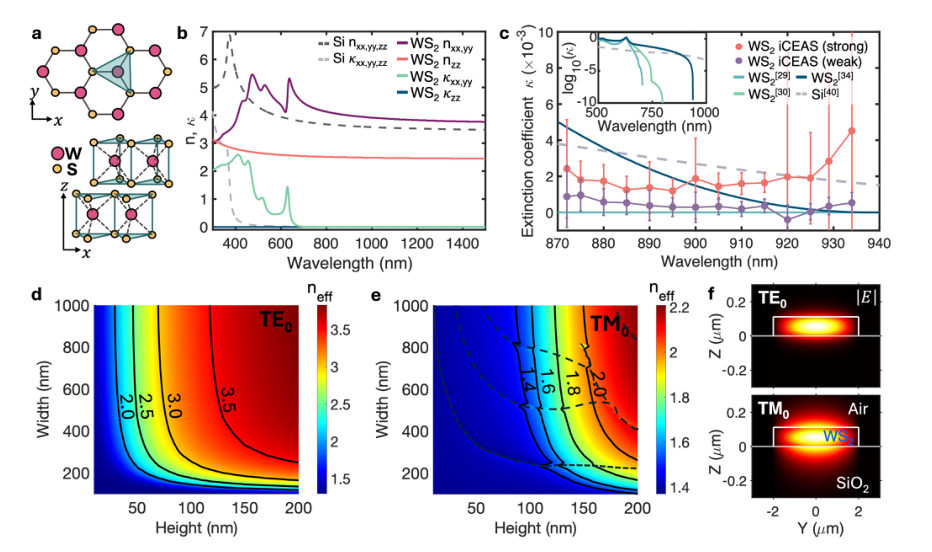
<figcaption class="paper-figure-caption"><b>Fig 1.</b> Figure 1: Optical waveguide quality of WS2 throughout the vis-NIR spectral window relative to silicon. a) atomic structure of WS2 as seen from above (top) and the side (bottom). b) Refractive indices in the vis-NIR window of WS2 and silicon sourced from [30] and [40], respectively. c) Extinction coefficient of a WS2 crystal measured via imaging Cavity-Enhanced Absorption Spectroscopy (iCEAS) within strongly and weakly absorbing local crystal regions compared with prior measurements of WS2 [29, 30, 34] and Si [40] κ. A logarithmic plot of the extinction coefficient of WS2 and silicon is provided within the inset to emphasise the sharper drop in absorption estimated for WS2. d) and e)...</figcaption>
</figure>
<figure class="paper-figure-card">

<figcaption class="paper-figure-caption"><b>Fig 2.</b> Figure 2: a) s-SNOM schematic showing side and top view. A metal-coated AFM tip is illuminated by a beam of laser light (path 1). This light is partially reflected directly to the detector from the tip (path 2), and partially coupled into the WS2 crystal via the plasmonic tip-sample interaction, propagating as a waveguided mode before scattering towards the detector at the crystal edge (path 3). Angles of the laser beam relative to the crystal edge, α and β, are indicated. b) Topography of quasi-bulk sample with a thickness of (112 ± 5) nm recorded via AFM demonstrating high uniformity and pristine edges. S-SNOM scans performed upon the RHS due to comparative lack of surface line and point...</figcaption>
</figure>
<figure class="paper-figure-card">
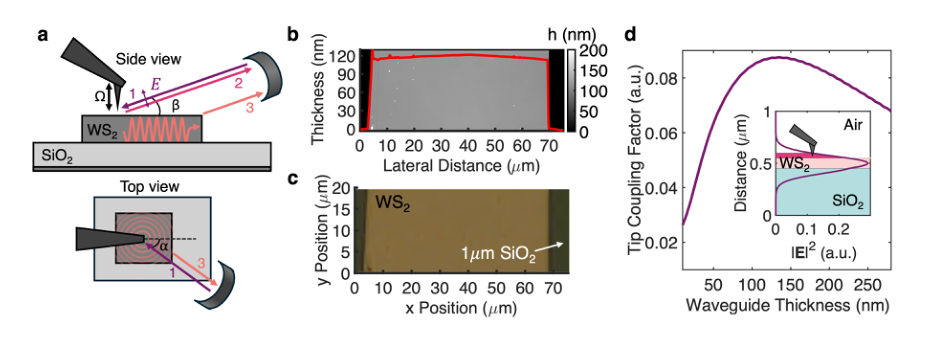
<figcaption class="paper-figure-caption"><b>Fig 3.</b> Fig. 3a presents representative s-SNOM amplitude images of the quasi-bulk crystal shown in Fig. 2b-c at</figcaption>
</figure>
<figure class="paper-figure-card">
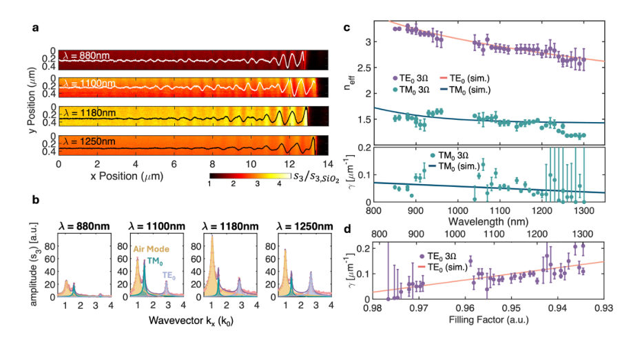
<figcaption class="paper-figure-caption"><b>Fig 4.</b> Figure 3: Nanoimaging of waveguide mode dispersion in WS2. a) SiO2-normalised s-SNOM images of a quasi-bulk 112nm-thick WS2 crystal with fringe line profiles overlaid for a small selection of incident laser beam wavelengths (λ). b) Fitted Fourier Transforms of the line profiles in (a) demonstrating the presence of three key peaks; the air mode (yellow), a poorly-confined TM0 mode (cyan) and the TE0 mode (lilac). c) neff Fitting results for the TE0 and TM0 mode measured throughout the low-absorption vis-NIR window of WS2, with Lumerical MODE simulation results for a 4 µm-width, 112 nm-thick crystal included for comparison. The fitted decay constant of the TM0 mode is plotted in the lower...</figcaption>
</figure>
<figure class="paper-figure-card">

<figcaption class="paper-figure-caption"><b>Fig 5.</b> Fig. 3b indicate that, owing to its unconfined nature, it decays much more rapidly from the crystal edge than the</figcaption>
</figure>
</div>

<p><strong>Summary.</strong> This work characterizes guided optical modes ($    ext{TE}_0$ and $    ext{TM}_0$) in WS2 nanobeams and bulk crystals using advanced near-field techniques like s-SNOM. By mapping modal dispersion and measuring material absorption, the authors establish robust diagnostic protocols for assessing waveguiding quality in these promising 2D materials.</p>
<p><strong>Why it may be interesting.</strong> While focused on photonics, the detailed analysis of wave propagation in anisotropic 2D materials provides insights into boundary conditions and field confinement that are relevant for designing quantum optical cavities or waveguides interacting with quantum emitters.</p>
<details>
<summary>Detailed structure</summary>
<p><strong>Main problem.</strong> The study addresses the limited experimental understanding of wavelength-dependent modal confinement and attenuation in WS2 waveguides, complicated by ambiguities in reported material extinction coefficients.</p>
<p><strong>Main result.</strong> s-SNOM reliably captures relative modal trends for TE0 and TM0 modes across 800–1400 nm, confirming its utility as a diagnostic tool despite absolute loss values depending on measurement geometry.</p>
<p><strong>Method.</strong> The authors employed hyperspectral cavity-enhanced imaging (iCEAS) to bound the extinction coefficient and utilized scattering-type s-SNOM microscopy to probe guided modes in both quasi-bulk and nanobeam WS2 waveguides.</p>
<p><strong>Model / system.</strong> The physical system is WS2, a layered van der Waals material promising for nanophotonics due to its high refractive index and optical anisotropy. Measurements are performed on patterned nanobeams and larger quasi-bulk crystals deposited on an SiO2/Si substrate.</p>
<p><strong>Key observables.</strong> Effective refractive indices (neff), modal confinement, propagation loss ($    ext{dB}/    ext{mm}$), and the extinction coefficient ($\kappa$) as functions of wavelength and geometry.</p>
<p><strong>Important parameters / regimes.</strong> Wavelength range: 800–1400 nm; key modes: $ ext{TE}_0$ and $    ext{TM}_0$; critical thickness regimes (e.g., $112 \pm 5 	ext{ nm}$).</p>
<p><strong>Assumptions / limitations.</strong> Absolute loss values measured by s-SNOM depend on measurement geometry, and nanobeam measurements can suffer from artifacts due to transverse interference or spatial sampling effects.</p>
<p><strong>Figures summary.</strong> Figures illustrate iCEAS extinction maps, simulated/measured mode dispersion curves ($ ext{neff}$ vs. $\lambda$), field profiles showing TE0/TM0 confinement factors, and Fourier Transform peak fitting results for different modes.</p>
<p><strong>Paper structure.</strong> The paper systematically moves from characterizing the material absorption (iCEAS) to mapping modal behavior in quasi-bulk crystals using s-SNOM, and finally analyzing mode dispersion and artifacts in highly confined nanobeams across a wide spectral range.</p>
</details>
<details>
<summary>Abstract</summary>
<p>The exceptionally high in-plane refractive index, low sub-bandgap absorption, and strong optical anisotropy of WS2 make it a promising material platform for next-generation integrated circuits for nanophotonics. Its layered van der Waals structure further enables heterogeneous integration with silicon photonics and emerging two-dimensional optoelectronic materials. However, despite increasing interest in the waveguiding properties of WS2, experimental studies of wavelength-dependent modal confinement and attenuation remain limited. Additionally, though the extinction coefficient of WS2 is expected to be near-negligible beneath the bandgap, reported values span orders of magnitude, leading to large uncertainty in predicted modal decay lengths and wafer-scale integration feasibility. To resolve these ambiguities we perform hyperspectral cavity-enhanced imaging, determining high-resolution upper and lower bounds on the extinction coefficient of WS2 within the visible-NIR edge. We further employ scattering-type scanning near-field optical microscopy (s-SNOM) to probe TE0, TM0, and higher-order modes in both quasi-bulk and nanobeam WS2 waveguides across the 800-1400 nm spectral range, enabling identification of mode-specific trends in wavevector dispersion and loss. This work simultaneously assesses s-SNOM as a probe of waveguide performance, and we find that while absolute loss values depend on measurement geometry, s-SNOM reliably captures relative modal trends and provides upper bounds on propagation loss, supporting its use as a diagnostic tool for anisotropic waveguides. We further identify significant artefacts in nanobeam measurements arising from transverse interference and spatial sampling effects when the structure size approaches the excitation wavelength, which can shift extracted effective indices by up to 0.25.</p>
</details>
<p><sub><a href="#top">↑ back to top</a></sub></p>

<p><a id="paper-2607.00919"></a></p>
<h3 id="symmetry-classification-of-non-reciprocal-responses-in-multiterminal-ring-devices"><a href="http://arxiv.org/abs/2607.00919v1">Symmetry Classification of Non-Reciprocal Responses in Multiterminal Ring Devices</a></h3>
<p><strong>Authors:</strong> Chen-How Huang, Tero T. Heikkilä<br>
<strong>Type:</strong> theory · <strong>Category:</strong> other · <strong>PDF:</strong> <a href="https://arxiv.org/pdf/2607.00919v1">https://arxiv.org/pdf/2607.00919v1</a><br>
<strong>Analysis basis:</strong> full PDF text, analyzed in chunks
<strong>Topic relevance:</strong> <code>non-equilibrium dynamics</code> <strong>2/5</strong> · <code>Keldysh / 2PI / non-Gaussian methods</code> <strong>1/5</strong> · <code>correlated / nonlocal dissipation</code> <strong>1/5</strong> · <code>driven-dissipative phase transition</code> <strong>1/5</strong> · <code>methods for driven-dissipative</code> <strong>1/5</strong></p>
<div class="figure-strip-hint">↔ Scroll figures horizontally</div>
<div class="paper-figures-scroll">
<figure class="paper-figure-card">

<figcaption class="paper-figure-caption"><b>Fig 1.</b> FIG. 1. (a) n-vertex ring for the classification of non- reciprocal electronic response. Each bond is assigned a binary current ek ∈{1, −1} describing the direction (counterclock- wise, clockwise) of non-reciprocity. (b) n = 3 ring of two different orbits classified by symmetries, the semi-circulator and circulator configurations.</figcaption>
</figure>
<figure class="paper-figure-card">

<figcaption class="paper-figure-caption"><b>Fig 2.</b> FIG. 3. (a,b) Single particle energy spectrum for the minimal model at θ = π/4 for (a) by = 0.02Γ (b) by = 0.1Γ. We also indicate the value of the Wmn for some of the intra(inter)-helcial pair transitions by the black arrows and labels in (c,d). (c,d) Wmn = P</figcaption>
</figure>
<figure class="paper-figure-card">

<figcaption class="paper-figure-caption"><b>Fig 3.</b> FIG. 4. Characterization of the system with in-plane field. (a) is the non-reciprocal transmission of the device. The red arrows indicate the reactive response region of the device. (b) show the absorption spectra of the three terminals of the device.</figcaption>
</figure>
<figure class="paper-figure-card">

<figcaption class="paper-figure-caption"><b>Fig 4.</b> FIG. 5. Reactive part of the response function Im[χnr] for (a) θ = π/3 (b) θ = π/4. (c,d) Wmn = P</figcaption>
</figure>
<figure class="paper-figure-card">

<figcaption class="paper-figure-caption"><b>Fig 5.</b> FIG. 6. (a) Non-reciprocal transmission and (b) power absorption of the toy model including the finite broadening and temperature kBT = δ = 0.001Γ.</figcaption>
</figure>
</div>

<p><strong>Summary.</strong> This paper establishes a rigorous symmetry framework using group theory to classify non-reciprocal responses in multi-terminal quantum ring devices. By analyzing the constraints imposed by symmetries like time-reversal and inversion, it predicts that only specific circulation patterns are physically observable in real systems. The findings are validated through detailed calculations on a superconducting quantum dot model.</p>
<p><strong>Why it may be interesting.</strong> This work provides a powerful, abstract mathematical tool (symmetry classification) to predict observable transport phenomena in mesoscopic superconducting circuits, which is highly relevant for designing novel quantum devices.</p>
<details>
<summary>Detailed structure</summary>
<p><strong>Main problem.</strong> The paper develops a symmetry-based framework to systematically classify non-reciprocal electrical responses occurring in multi-terminal quantum ring devices.</p>
<p><strong>Main result.</strong> For an isosceles $n=3$ ring, the analysis predicts that only two types of non-reciprocal responses (uniform circulation and specific semi-circulation) are allowed due to residual geometric symmetries after breaking time-reversal ($T$) and inversion ($I$).</p>
<p><strong>Method.</strong> The core method involves applying group theory (Burnside's Lemma) to classify the $2^n$ bond configurations into symmetry orbits, linking topological invariants like the winding number ($W$) to observable physical responses.</p>
<p><strong>Model / system.</strong> The system is modeled as an $n$-vertex quantum ring device, analyzed using a minimal toy model of three quantum dots coupled to superconducting baths. The analysis extends from general ring structures to specific geometries like equilateral and isosceles triangles.</p>
<p><strong>Key observables.</strong> Non-reciprocal transmission ($S_{nr}^{ab}$), the imaginary part of the current-current response function ($ ext{Im}[\chi_{nr}]$), and the absolute non-reciprocal weight ($R_{nr}^{tot}$).</p>
<p><strong>Important parameters / regimes.</strong> The number of vertices $n$ (especially $n=3$), geometric symmetry type (equilateral vs. isosceles), and external field parameters like Zeeman fields ($\lambda$) or superconducting phase biases.</p>
<p><strong>Assumptions / limitations.</strong> The analysis relies on the applicability of group theory to classify configurations, assuming that non-reciprocity requires the simultaneous breaking of both time-reversal ($T$) and spatial inversion ($I$) symmetries.</p>
<p><strong>Figures summary.</strong> Figures illustrate the ring structure, show energy spectra splitting due to external fields, plot the reactive part of $   ext{Im}[\chi_{nr}]$ revealing distinct circulator/semi-circulator bands, and map out topological phase diagrams based on symmetry breaking.</p>
<p><strong>Paper structure.</strong> The paper progresses by first establishing the general group theory framework for $n$-rings, then applying this to the minimal $n=3$ case, distinguishing between equilateral and isosceles geometries. It validates these theoretical predictions using a detailed quantum dot toy model calculation of linear response functions.</p>
</details>
<details>
<summary>Abstract</summary>
<p>We present a symmetry-based framework to classify the non-reciprocal responses of multiterminal ring quantum devices. The device is modeled as a ring of $n$ vertices, where a binary variable $e_k\in\{+1,-1\}$ on each bond encodes the preferred direction of signal flow between terminals. Non-reciprocity corresponds to a preferred current configuration on the ring, and the symmetry group of the device partitions all $2^n$ configurations into equivalence classes(orbits) characterized by a topological winding number $W$. Using the minimal non-trivial case $n=3$, we establish two results independent of microscopic details. First, lifting the degeneracy within an orbit generates non-reciprocal responses. For $n=3$ this requires simultaneous breaking of both time-reversal $T$ and spatial inversion $I$. Breaking either alone is insufficient. Second, the residual geometry symmetry after $T$ and $I$ are broken determines which responses are observable. For an isosceles triangular geometry, only two types of response are allowed: uniform circulation (all bonds carrying current in the same direction) and semi-circulation with the reversed bond on the geometrically distinct base. Semi-circulation with the reversed bond on either equal leg is symmetry-forbidden. Both predictions are validated using a minimal toy model of three quantum dots coupled to superconducting baths, which demonstrates a reactive quantum circulator response.</p>
</details>
<p><sub><a href="#top">↑ back to top</a></sub></p>

<p><a id="paper-2607.00662"></a></p>
<h3 id="collective-phase-modes-in-twisted-math1206math-wave-superconducting-bilayers"><a href="http://arxiv.org/abs/2607.00662v1">Collective phase modes in twisted $d$-wave superconducting bilayers</a></h3>
<p><strong>Authors:</strong> Yin Shi, Mengxian Zhao, Fei Yang, Miao Liu, Sheng Meng<br>
<strong>Type:</strong> theory · <strong>Category:</strong> strongly correlated electrons · <strong>PDF:</strong> <a href="https://arxiv.org/pdf/2607.00662v1">https://arxiv.org/pdf/2607.00662v1</a><br>
<strong>Analysis basis:</strong> full PDF text, analyzed in chunks
<strong>Topic relevance:</strong> <code>Keldysh / 2PI / non-Gaussian methods</code> <strong>1/5</strong> · <code>analog quantum simulation</code> <strong>1/5</strong> · <code>correlated / nonlocal dissipation</code> <strong>1/5</strong> · <code>driven-dissipative phase transition</code> <strong>1/5</strong> · <code>methods for driven-dissipative</code> <strong>1/5</strong></p>
<div class="figure-strip-hint">↔ Scroll figures horizontally</div>
<div class="paper-figures-scroll">
<figure class="paper-figure-card">
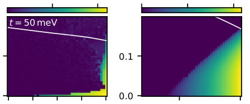
<figcaption class="paper-figure-caption"><b>Fig 1.</b> FIG. 1. Minimal superconducting gaps in the twist-angle– temperature plane with (left panel) and without (right panel) phase fluctuations for three different tunneling amplitudes. The diagrams are symmetric about θ = 45◦. T 1L c is the su- perconducting transition temperature of a monolayer. The white lines delineate the normal–superconducting phase bor- der, while the d–d + id′ border is obvious by the false color.</figcaption>
</figure>
<figure class="paper-figure-card">

<figcaption class="paper-figure-caption"><b>Fig 2.</b> FIG. 3. Josephson gap (left panel) and magnitude of the order parameter (right panel) in the twist-angle–temperature plane for t = 10 meV.</figcaption>
</figure>
<figure class="paper-figure-card">

<figcaption class="paper-figure-caption"><b>Fig 3.</b> FIG. 2. Superfluid stiffnesses with (left column) and with- out (right column) phase fluctuations in the twist-angle– temperature plane for t = 10 meV. The dashed line delineates the d–(d + id′) border for the mean-field case, while such a border is obvious by the false color for the phase fluctuating case.</figcaption>
</figure>
</div>

<p><strong>Summary.</strong> This work theoretically analyzes phase fluctuations in twisted d-wave superconducting bilayers, which are predicted to host chiral superconductivity. By retaining all orders of Josephson coupling, the authors show that these fluctuations significantly modify the collective mode spectrum. The key findings include a finite relative-phase stiffness even in the normal state and critical behavior indicating the breakdown of Josephson phase locking near quantum critical points.</p>
<p><strong>Why it may be interesting.</strong> While focused on superconductivity, the detailed analysis of collective mode excitations (phase dynamics) and symmetry breaking mechanisms (U(1) symmetry) provides general theoretical tools applicable to understanding order parameter fluctuations in various strongly correlated quantum systems.</p>
<details>
<summary>Detailed structure</summary>
<p><strong>Main problem.</strong> The study investigates how higher-order Josephson coupling processes modify the low-energy phase fluctuations in twisted d-wave superconducting bilayers.</p>
<p><strong>Main result.</strong> Phase fluctuations suppress the relative-phase stiffness but enhance the overall-phase stiffness in the d+id' phase, and the relative-phase mode acquires a gap strongly suppressed near the chiral quantum critical point.</p>
<p><strong>Method.</strong> The authors use a theoretical analysis involving deriving an effective action for long-wavelength phase fluctuations by integrating out fermionic fields using a continuum microscopic model.</p>
<p><strong>Model / system.</strong> The system is twisted cuprate bilayers exhibiting potential high-temperature chiral d+id' superconductivity, modeled via coupled d-wave superconducting monolayers with interlayer tunneling and Coulomb repulsion.</p>
<p><strong>Key observables.</strong> Relative-phase stiffness, overall-phase stiffness, excitation gap of relative-phase fluctuations ($\omega_\pi(q)$), and the stability window of the d+id' phase.</p>
<p><strong>Important parameters / regimes.</strong> Interlayer tunneling amplitude ($t$), temperature ($T$), and twist angle ($   heta$).</p>
<p><strong>Assumptions / limitations.</strong> The analysis is restricted to the low-temperature regime where only long-wavelength fluctuations are relevant, and it assumes a mean-field framework for calculating fluctuation coefficients.</p>
<p><strong>Figures summary.</strong> Figure 1 shows how phase fluctuations narrow the stability window of the d+id' phase. Figure 2 displays superfluid stiffnesses ($D_0, D_\pi$) vs. temperature/twist angle. Figure 3 illustrates the Josephson gap ($\Delta_J$) and order parameter magnitude near the TRSB point.</p>
<p><strong>Paper structure.</strong> The paper develops an effective action for phase fluctuations by systematically including higher-order Josephson coupling terms, analyzes the resulting stiffnesses and gaps, and compares these results to mean-field predictions, focusing on critical behavior near quantum phase transitions.</p>
</details>
<details>
<summary>Abstract</summary>
<p>Twisted cuprate bilayers have been predicted to host high-temperature chiral $d+id'$ superconductivity, originating from higher-order Josephson coupling processes. In such two-dimensional superconducting systems, long-wavelength fluctuations in the phase of the superconducting order parameter constitute gapless collective modes and therefore remain significant even at zero temperature. Here, we perform a theoretical analysis of the low-energy phase fluctuations in twisted $d$-wave superconducting bilayers, systematically retaining Josephson coupling to all orders. We demonstrate that higher-order Josephson coupling processes lead to nontrivial modifications of the phase dynamics. In particular, the stiffness of the relative phase between the two layers is finite even in the normal state, which is a direct consequence of the intralayer U(1) symmetry breaking explicitly induced by interlayer tunneling. Phase fluctuations suppress the relative-phase stiffness but enhance the overall-phase stiffness in the $d+id'$ phase. Furthermore, the relative-phase fluctuations acquire a small but finite excitation gap, which is no longer equal to the Josephson plasma frequency and is strongly suppressed upon approaching the chiral quantum critical point, indicating the breakdown of Josephson phase locking within the superconducting state.</p>
</details>
<p><sub><a href="#top">↑ back to top</a></sub></p>

<p><a id="paper-2607.00914"></a></p>
<h3 id="imaging-superconducting-weak-spots-through-vortex-assisted-thz-near-field-photovoltage"><a href="http://arxiv.org/abs/2607.00914v1">Imaging superconducting weak spots through vortex-assisted THz near-field photovoltage</a></h3>
<p><strong>Authors:</strong> Sergio J. Salvía-Fernández, Ekaterina Khestanova, Zoe Velluire-Pellat, Leonardo R. Cadorim, Sergi Batlle-Porro, David A. Czaplewski, Johann Osmond, Sebastian Castilla, Adrian Bachtold, Milorad V. Milošević, Aharon Kapitulnik, Frank H. L. Koppens<br>
<strong>Type:</strong> experiment · <strong>Category:</strong> other · <strong>PDF:</strong> <a href="https://arxiv.org/pdf/2607.00914v1">https://arxiv.org/pdf/2607.00914v1</a><br>
<strong>Analysis basis:</strong> full PDF text, analyzed in chunks
<strong>Topic relevance:</strong> <code>Kondo &amp; dissipative impurity</code> <strong>1/5</strong> · <code>driven-dissipative phase transition</code> <strong>1/5</strong> · <code>methods for driven-dissipative</code> <strong>1/5</strong> · <code>non-equilibrium dynamics</code> <strong>1/5</strong> · <code>quantum optics experiment</code> <strong>1/5</strong></p>
<div class="figure-strip-hint">↔ Scroll figures horizontally</div>
<div class="paper-figures-scroll">
<figure class="paper-figure-card">

<figcaption class="paper-figure-caption"><b>Fig 1.</b> Fig. 1. Electron transport and near-field photovoltage profiling under THz illumination. a Microscope image of the device (scale bar 150 µm). Orange regions correspond to the NbN film, purple corresponds to the Si/SiO2 substrate. b Device resistivity, 𝜌, as a function of temperature measured in the dark and under continuous-wave 2.52 THz illumination with the laser power of 1.7 mW at the cryostat window. The inset shows the temperature derivative d𝜌/dT, with dashed lines marking the superconducting transition temperature (𝑇c) defined at the maximum of the derivative. c Schematic diagram of the THz near-field photovoltage experiment. d THz near-field photovoltage (purple line) and AFM...</figcaption>
</figure>
<figure class="paper-figure-card">

<figcaption class="paper-figure-caption"><b>Fig 2.</b> Fig. 2. Local peak in the near-field photovoltage at 𝑻 = 𝟏𝟑. 𝟖𝟔 𝐊. a Current-space near-field photovoltage map measured at 𝑇 = 13.86 K. b Zoomed-in view of the 𝑉PV profile obtained by averaging the line scans from the map in (a) over the current range 𝐼b = [380, 420] µA, with a Gaussian fit to the photovoltage peak (solid purple line) found at 𝑥= 12.52 μm. Orange vertical dashed lines indicate the FWHM of the peak. c Current dependence of the FWHM of the peak extracted from the map in (a). d Current dependence of amplitude of the central peak extracted from the analysis of the map in panel (a).</figcaption>
</figure>
<figure class="paper-figure-card">

<figcaption class="paper-figure-caption"><b>Fig 3.</b> Fig. 3. Multiple local near-field photovoltage peaks at 𝑻 = 𝟏𝟑. 𝟗𝟕 𝐊. a Current-space near-field photovoltage map measured at 𝑇 = 13.97 K (full map shown in Fig. S6). b Horizontal 𝑉PV profiles (trace and retrace) obtained by averaging the line scans from the map in panel (a) over the current range 𝐼b = [290, 350] µA. The trace and retrace profiles were shifted by 1 µm to account for hysteresis in the piezoelectric scanners. c Zoomed-in view of the trace and retrace 𝑉PV profiles shown in (b). The green line plots the Gaussian fit to the peak in the trace profile. d Normalized autocorrelation</figcaption>
</figure>
<figure class="paper-figure-card">

<figcaption class="paper-figure-caption"><b>Fig 4.</b> Fig. 4. Current dependence of the near-field photovoltage signal. a Current-space 𝑉PV maps measured at various temperatures. Short-dashed lines mark the 𝐼𝑐 values obtained from the far-field VI curves using the criterion 𝑉&gt; 50 μV. Long-dashed lines indicate the current corresponding to the maximum observed photovoltage. The purple shaded area corresponds to the region used to extract the horizontal cuts shown in (b). b Near-field photovoltage at the edge as a function of bias current, extracted from the maps in panel (a). Vertical dashed lines indicate the current of maximum 𝑉PV. c dV/dI curves extracted from the DC transport data under far-field illumination. d Zoomed-in current-space map...</figcaption>
</figure>
</div>

<p><strong>Summary.</strong> The research pioneers the use of THz near-field photovoltage microscopy to image nanoscale defects within superconductors. By exciting the material with THz radiation, they measure localized voltage peaks that correlate directly with enhanced vortex dynamics at these weak spots. This technique provides a powerful new tool for understanding how material disorder influences superconducting properties.</p>
<p><strong>Why it may be interesting.</strong> This work bridges superconducting theory (vortex dynamics, gap energy) with advanced quantum optics/nano-spectroscopy techniques. The ability to probe local electronic states using THz photons is highly relevant for understanding non-equilibrium quantum phenomena in condensed matter.</p>
<details>
<summary>Detailed structure</summary>
<p><strong>Main problem.</strong> The primary challenge is experimentally probing nanoscale inhomogeneities (weak spots) within superconductors, as their relevant energy scales are in the THz range, which far-field techniques cannot resolve.</p>
<p><strong>Main result.</strong> The authors successfully demonstrated that THz near-field photovoltage nanoscopy can map these defects by observing localized photovoltage peaks associated with enhanced vortex-antivortex pair nucleation at defect sites.</p>
<p><strong>Method.</strong> They employed THz near-field photovoltage nanoscopy using an AFM tip to confine THz radiation, achieving $\sim 300 	ext{ nm}$ spatial resolution while simultaneously measuring the local voltage response under a DC bias current.</p>
<p><strong>Model / system.</strong> The study uses superconducting thin films (e.g., NbN) as the physical system. The physics involves quasiparticle excitation via THz photons, leading to vortex-assisted dissipation and measurable photovoltage ($  ext{V}_{    ext{PV}}$). Theoretical support comes from Time-Dependent Ginzburg-Landau simulations.</p>
<p><strong>Key observables.</strong> Photovoltage ($    ext{V}_{    ext{PV}}$) spatial profiles showing localized peaks; the non-monotonic dependence of peak amplitude on bias current ($I_b$); and the constant Full Width at Half Maximum ($ ext{FWHM}$) of these peaks.</p>
<p><strong>Important parameters / regimes.</strong> THz frequency (2.52 THz, $\hbar\omega = 10.4 	ext{ meV}$), spatial resolution ($\sim 300 	ext{ nm}$), and the superconducting gap energy ($2\Delta$).</p>
<p><strong>Assumptions / limitations.</strong> The observed $   ext{V}_{    ext{PV}}$ peak is directly attributed to enhanced vortex-antivortex pair nucleation at sites of reduced superfluid density (defects).</p>
<p><strong>Figures summary.</strong> Figures show spatial maps and profiles of the measured $   ext{V}_{    ext{PV}}$, detailing how these peaks appear in the bulk, their dependence on bias current, and confirmation using autocorrelation functions.</p>
<p><strong>Paper structure.</strong> The paper establishes the technical feasibility by describing the THz near-field setup. It then presents evidence via spatial mapping to locate defects (peaks), followed by analyzing the physics of the signal—showing its correlation with vortex dynamics and comparing results against theoretical TDGL simulations.</p>
</details>
<details>
<summary>Abstract</summary>
<p>Nanoscale inhomogeneities are a defining feature of many superconducting materials, yet their local electromagnetic response has remained difficult to access experimentally. This is because their relevant energy scale lies in the terahertz range, where wavelengths -- on the order of hundreds of microns -- are too large to spatially resolve nanoscopic variations. Here, we demonstrate the first application of THz near-field photovoltage nanoscopy in a superconductor, achieving 300 nm spatial resolution at 2.52 THz. Scanning a current-biased NbN strip, we reveal photovoltage peaks within the bulk associated with nanoscopic defects of reduced superfluid density. The observed photovoltage follows the evolution of the vortex-dissipative state and is attributed to enhanced vortex-antivortex pair nucleation at defect sites. Together, these results open a direct route to probing how material inhomogeneities influence light-matter interactions in superconductors, with implications for superconducting devices and strongly inhomogeneous systems such as high-Tc and moiré materials.</p>
</details>
<p><sub><a href="#top">↑ back to top</a></sub></p>

<p><a id="paper-2607.00271"></a></p>
<h3 id="valley-dependent-electron-optics-using-quantum-dots-in-bilayer-graphene"><a href="http://arxiv.org/abs/2607.00271v1">Valley-dependent electron optics using quantum dots in bilayer graphene</a></h3>
<p><strong>Authors:</strong> Fereshte Ildarabadi, Stephen R. Power<br>
<strong>Type:</strong> theory · <strong>Category:</strong> other · <strong>PDF:</strong> <a href="https://arxiv.org/pdf/2607.00271v1">https://arxiv.org/pdf/2607.00271v1</a><br>
<strong>Analysis basis:</strong> full PDF text, analyzed in chunks
<strong>Topic relevance:</strong> <code>methods for driven-dissipative</code> <strong>1/5</strong> · <code>non-equilibrium dynamics</code> <strong>1/5</strong></p>
<div class="figure-strip-hint">↔ Scroll figures horizontally</div>
<div class="paper-figures-scroll">
<figure class="paper-figure-card">
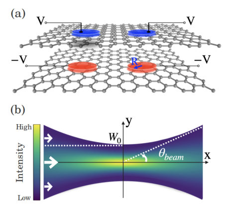
<figcaption class="paper-figure-caption"><b>Fig 1.</b> FIG. 1: (a) Schematic of two oppositely gated QDs with ra- dius R in BLG. (b) Gaussian beam propagating along the x direction. W0 is the beam waist, and θbeam denotes the char- acteristic divergence angle.</figcaption>
</figure>
<figure class="paper-figure-card">

<figcaption class="paper-figure-caption"><b>Fig 2.</b> FIG. 2: (a) Far-field angular dependence of the valley-resolved and total (K+K′) scattered current for plane-wave incidence; (b) Corresponding total current flow (arrows) and valley po- larization (color map). (c) Same angular dependence for a Gaussian beam; dashed curves indicate currents evaluated at finite distance; (d) Corresponding current flow and valley po- larization.</figcaption>
</figure>
<figure class="paper-figure-card">
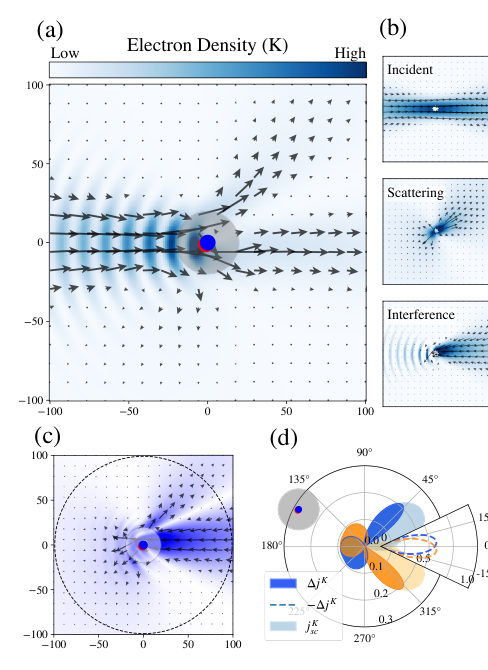
<figcaption class="paper-figure-caption"><b>Fig 3.</b> FIG. 3: (a) Current flow (arrows) and density (color map) for the K valley under Gaussian-beam incidence. (b) Decompo- sition into incident, scattered, and interference contributions. (c) Difference current map ∆jK. the K′ response is the mirror image of the K response with respect to the x axis for (a)- (c). (d) Angular dependence of ∆jK at r = 100 l0 denoted by dashed circle in (c). Light colors curves show far-field re- sults; orange curves correspond to the K′ valley. The inset polar sector shows negative contributions within ±θbeam, cor- responding to forward-current suppression.</figcaption>
</figure>
<figure class="paper-figure-card">
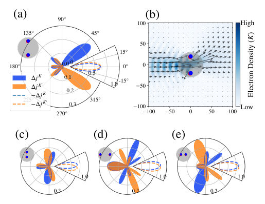
<figcaption class="paper-figure-caption"><b>Fig 4.</b> FIG. 4: Valley-resolved current distributions resulting from multiple scattering by two identical QDs under Gaussian- beam incidence. (a) ∆j for vertically aligned dots with d = 8R (upper-left inset), showing efficient valley splitting. Blue and orange curves correspond to the K and K′ valleys, respectively; the dashed curves in the right inset show the negative part of ∆j in the forward-direction beam region. (b) Corresponding K-valley current-flow (arrows) and elec- tron density (color map); the K′ response is the mirror image of the K response with respect to the x axis. (c)–(e) ∆j for vertically aligned dots with d = 4R, and horizontally aligned dots with d = 8R and 4R, respectively.</figcaption>
</figure>
<figure class="paper-figure-card">

<figcaption class="paper-figure-caption"><b>Fig 5.</b> FIG. 5: Valley-resolved current for a 2 × 2 array of identical QDs with d = 4R. (a) ∆j, showing strong transverse deflec- tion and reduced valley overlap, forming an efficient valley splitter. (b) Corresponding K-valley current-flow (arrows) and electron density (color map); the K′ response is its mir- ror image with respect to the x-axis. (c) Total current map overlaid on the valley polarization color map. (d) Valley cur- rent map, showing strong transverse valley separation.</figcaption>
</figure>
</div>

<p><strong>Summary.</strong> The paper proposes using electrostatically gated quantum dots in bilayer graphene to create controllable devices for manipulating electron valleys. By engineering the dot array geometry—especially by opposing the gate potentials—the system can function as a highly efficient valley filter or splitter. This establishes a realistic solid-state platform for generating and steering pure valley currents.</p>
<p><strong>Why it may be interesting.</strong> This work provides a concrete, tunable solid-state platform for valleytronics, which is highly relevant to quantum information processing by offering methods to manipulate spin or valley degrees of freedom without relying on external magnetic fields.</p>
<details>
<summary>Detailed structure</summary>
<p><strong>Main problem.</strong> The goal is to develop a tunable platform for achieving valley-dependent electron optics in bilayer graphene (BLG) using electrostatically defined quantum dots (QDs). This allows for controlling the flow of electrons based on their valley index ($K$ vs $K'$).</p>
<p><strong>Main result.</strong> By engineering QD arrays—specifically using oppositely gated pairs—the system can act as an efficient valley filter or splitter, generating highly polarized currents with strong suppression of forward transmission.</p>
<p><strong>Method.</strong> The analysis employs a four-band continuum model and solves the scattering problem using a generalized multiple-scattering formalism. The total current is decomposed into incident, scattered, and interference components for detailed characterization.</p>
<p><strong>Model / system.</strong> The physical system is Bernal-stacked BLG containing electrostatically defined QDs. The mechanism relies on layer-antisymmetric gating to induce opposite signs of a mass-like term in the two valleys ($K$ and $K'$), enabling valley-dependent scattering without external fields.</p>
<p><strong>Key observables.</strong> Valley-resolved currents ($\mathbf{j}_K$ vs $\mathbf{j}_{K'}$), angular profiles, and the degree of valley polarization quantified by $P(r, 	heta)$.</p>
<p><strong>Important parameters / regimes.</strong> Dot radius ($R=10 	ext{ nm}$), layer asymmetry ($\Delta = 152 	ext{ meV}$), Fermi energy ($\approx 19 	ext{ meV}$).</p>
<p><strong>Assumptions / limitations.</strong> The analysis assumes the use of a four-band continuum model and approximates the incident beam using Gaussian profiles, which helps suppress interference effects compared to plane waves.</p>
<p><strong>Figures summary.</strong> Figures illustrate schematic setups (single/multi-dot arrays), far-field angular dependence of valley currents for both plane-wave and Gaussian incidence, and real-space current maps showing filtering or splitting actions based on dot gating geometry.</p>
<p><strong>Paper structure.</strong> The paper progresses from establishing the basic single-dot scattering mechanism to analyzing multi-dot configurations. It systematically compares the roles of identical vs. oppositely gated dots, culminating in the demonstration of combined filter/splitter functionality using engineered arrays.</p>
</details>
<details>
<summary>Abstract</summary>
<p>Electrostatically defined quantum dots (QDs) with layer-antisymmetric gating in Bernal-stacked bilayer graphene (BLG) open a local gap and generate a mass-like term with opposite sign in the two valleys, producing strongly valley-dependent scattering without magnetic fields, strain, or spin-orbit coupling. Building on this mechanism, we propose a tunable platform based on such QDs for valley-dependent electron optics in BLG. Using a four-band continuum model and a generalized multiple-scattering formalism, we analyze scattering of Gaussian electron beams from single- and multi-dot architectures and compute valley-resolved currents and angular profiles. A single dot produces distinct valley-dependent deflection, while multi-dot configurations enable enhanced control: identical-dot arrays act as valley splitters, whereas oppositely gated pairs function as valley filters. Combining these elements yields tunable generation, steering, and filtering of highly valley-polarized currents with strong suppression of forward transmission. The required energy scales, gate asymmetries, and device dimensions are within experimentally accessible regimes for dual-gated BLG, establishing quantum-dot arrays as a realistic platform for controllable valley-resolved electron optics.</p>
</details>
<p><sub><a href="#top">↑ back to top</a></sub></p>

<hr>
<p>
<a href="index.html">← Index</a>
 · <a href="papers_05.html">← Previous</a>
</p>
<hr>

</body>
</html>
